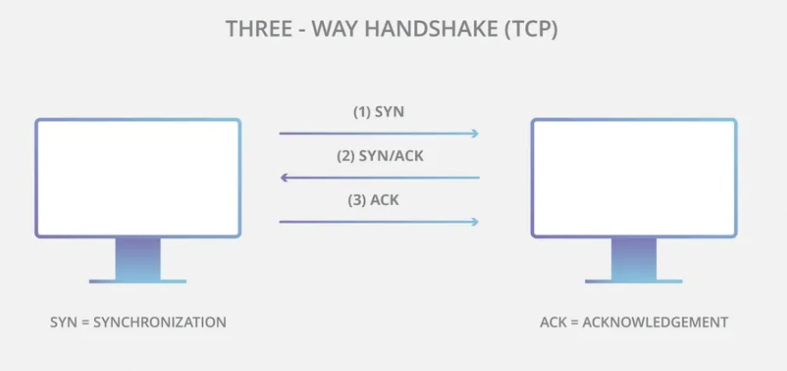
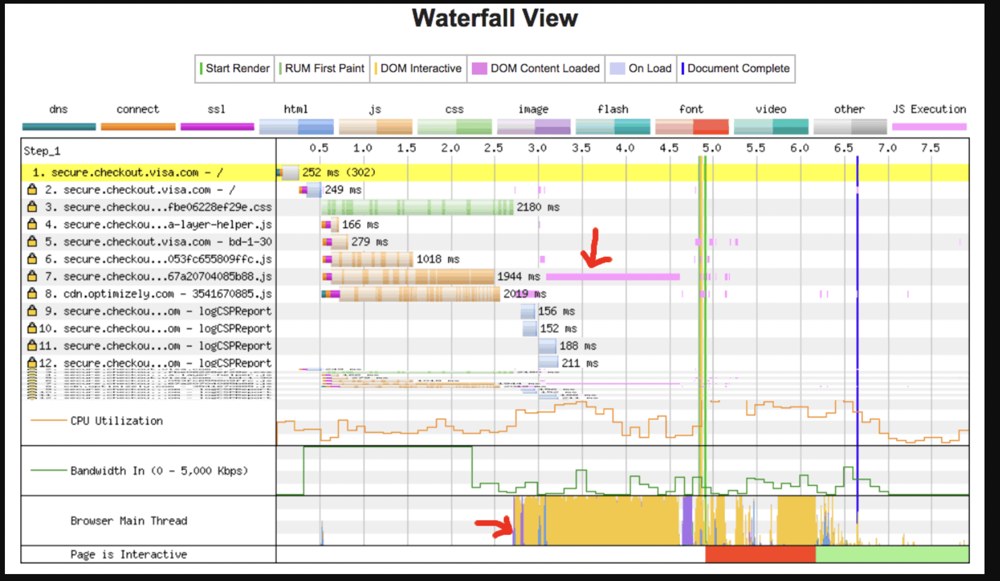
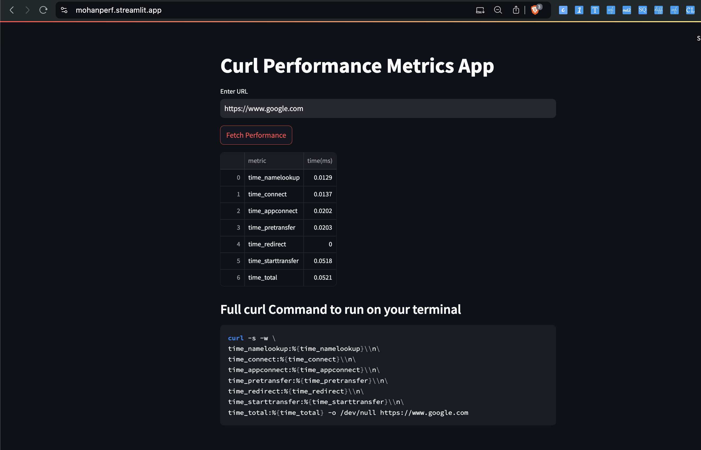

1. What is Web Performance?
Objective measurements
- time to load
- frames per second
- time to become interactive
Subjective measurements
- how long it felt like it took the content to load
Goals
-
making the experience as available and interactive as possible, as soon as possible, while asynchronously loading in the longer tail parts of the experience.
-
users want web experiences with content that is fast to load and smooth to interact with.
Issues
Two major issues in web performance are issues having to do with latency and issues having to do with the fact that for the most part, browsers are single-threaded
-
Browsers execute a task from beginning to end before taking up another task.
- Minimize the main thread's responsibilities, where possible and appropriate, to ensure rendering is smooth and responses to interactions are immediate.
- Render time is key, ensuring the main thread can complete all the work we throw at it and still always be available to handle user interactions.
-
The user gets the requested information as quickly as possible
Lazy Loading
- Lazy loading is a strategy to identify resources as non-blocking (non-critical) and load these only when needed.
- It's a way to shorten the length of the critical rendering path, which translates into reduced page load times
Navigation timing
- measures the main document's timings
Resource timing
- provides the times for all the assets or resources called in by the main document and the resources' requested resources.
Two approaches for monitoring and providing insight into web performance
- Synthetic monitoring
- very well suited to regression testing and mitigating shorter-term performance issues during development
- Real user monitoring (RUM)
- best suited for understanding long-term trends
Speculative loading
-
practice of performing navigation actions (such as DNS fetching, fetching resources, or rendering documents) before the associated pages are actually visited, based on predictions as to what pages the user is most likely to visit next.
-
DNS-prefetch is an attempt to resolve domain names before resources get requested. This could be a file loaded later or link target a user tries to follow.
Latency
- time it takes for a packet of data to travel from source to a destination.
DNS Lookup
Your browser requests a DNS lookup, which is eventually fielded by a name server, which in turn responds with an IP address
After this initial request, the IP will likely be cached for a time, which speeds up subsequent requests by retrieving the IP address from the cache instead of contacting a name server again.
If your fonts, images, scripts, ads, and metrics all have different hostnames, a DNS lookup will have to be made for each one.
This can be problematic for performance, particularly on mobile networks. When a user is on a mobile network, each DNS lookup has to go from the phone to the cell tower to reach an authoritative DNS server. The distance between a phone, a cell tower, and the name server can add significant latency.
TCP handshake
Once the IP address is known, the browser sets up a connection to the server via a TCP three-way handshake.
This handshake step happens after a DNS lookup and before the TLS handshake, when creating a secure connection.
DNS Lookup --- TCP handshake --- TLS handshake
This mechanism is designed so that two entities attempting to communicate — in this case the browser and web server — can negotiate the parameters of the network TCP socket connection before transmitting data, often over HTTPS.
There are three messages ( SYN-SYN-ACK ) transmitted by TCP to negotiate and start a TCP session between two computer Three messages back and forth between each server, and the request has yet to be made
| No. | What it does |
|---|---|
| 1 | The initiator, generally the browser, sends a TCP SYNchronize packet to the other host, generally the server. |
| 2 | The server receives the SYN and sends back a SYNchronize-ACKnowledgement. |
| 3 | The initiator receives the server's SYN-ACK and sends an ACKnowledge. The server receives ACK and the TCP socket connection is established. |

Connection termination - four-way handshake
| No. | What it does |
|---|---|
| 1 | The initiator, generally the browser, sends the FIN packet to the other host |
| 2 | The other host sends an ACK packet back to the initiator. |
| 3 | Now, the connection is half-closed, and the other host can still send data. (For example, the server can finish off sending data to the client when the client has closed its connection to the server.) |
| 4 | The other host sends a FIN packet to the initiator. |
| 5 | The initiator sends an ACK packet back to the other host. |
TLS handshake
For secure connections established over HTTPS, another "handshake" is required.
This determines - which cipher will be used to encrypt the communication - verifies the server - establishes that a secure connection is in place before beginning the actual transfer of data

Server provides the Cert which contains the public key of the server. This key is used by clients to encrypt data that can only be decrypted by the corresponding private key held by the server.
While making the connection secure adds time to the page load, a secure connection is worth the latency expense, as the data transmitted between the browser and the web server cannot be decrypted by a third party.
Response
Once we have an established connection to a web server, the browser sends an initial HTTP GET request on behalf of the user, which for websites is most often an HTML file.
Once the server receives the request, it will reply with relevant response headers and the contents of the HTML.
This response for this initial request contains the first byte of data received.
Time to First Byte (TTFB) is the time between when the user made the request — say by clicking on a link — and the receipt of this first packet of HTML. The first chunk of content is usually 14KB of data.
TCP
TCP packets are split into segments during transmission. Because TCP guarantees the sequence of packets, the server must receive an acknowledgment from the client in the form of an ACK packet after sending a certain number of segments.
If the server waits for an ACK after each segment, that will result in frequent ACKs from the client and may increase transmission time, even in the case of a low-load network.
On the other hand, sending too many segments at once can lead to the problem that in a busy network the client will not be able to receive the segments and will just keep responding with ACKs for a long time, and the server will have to keep re-sending the segments.
In order to balance the number of transmitted segments, the TCP slow start algorithm is used to gradually increase the amount of transmitted data until the maximum network bandwidth can be determined, and to reduce the amount of transmitted data in case of high network load.
The number of segments to be transmitted is controlled by the value of the congestion window (CWND), which can be initialized to 1, 2, 4, or 10 MSS (MSS is 1500 bytes over the Ethernet protocol). That value is the number of bytes to send, upon receipt of which the client must send an ACK.
If an ACK is received, then the CWND value will be doubled, and so the server will be able to send more segments the next time. If instead no ACK is received, then the CWND value will be halved. That mechanism thus achieves a balance between sending too many segments, and sending too few.
Parsing
Once the browser receives the first chunk of data, it can begin parsing the information received. Parsing is the step the browser takes to turn the data it receives over the network into the DOM and CSSOM, which is used by the renderer to paint a page to the screen.
The DOM is the internal representation of the markup for the browser. The DOM is also exposed and can be manipulated through various APIs in JavaScript.
Even if the requested page's HTML is larger than the initial 14KB packet, the browser will begin parsing and attempting to render an experience based on the data it has. This is why it's important for web performance optimization to include everything the browser needs to start rendering a page, or at least a template of the page — the CSS and HTML needed for the first render — in the first 14KB. But before anything is rendered to the screen, the HTML, CSS, and JavaScript have to be parsed.
DOM Tree
The first step is processing the HTML markup and building the DOM tree. HTML parsing involves tokenization and tree construction. HTML tokens include start and end tags, as well as attribute names and values. If the document is well-formed, parsing it is straightforward and faster. The parser parses tokenized input into the document, building up the document tree.
The DOM tree describes the content of the document. The html element is the first element and root node of the document tree. The tree reflects the relationships and hierarchies between different elements. Elements nested within other elements are child nodes. The greater the number of DOM nodes, the longer it takes to construct the DOM tree.
When the parser finds non-blocking resources, such as an image, the browser will request those resources and continue parsing.
Parsing can continue when a CSS file is encountered, but script elements — particularly those without an async or defer attribute — block rendering, and pause the parsing of HTML. Though the browser's preload scanner hastens this process, excessive scripts can still be a significant bottleneck.
Preload scanner
While the browser builds the DOM tree, this process occupies the main thread.
While the browser builds the DOM tree, this process occupies the main thread. As this happens, the preload scanner will parse through the content available and request high-priority resources like CSS, JavaScript, and web fonts. Thanks to the preload scanner, we don't have to wait until the parser finds a reference to an external resource to request it. It will retrieve resources in the background so that by the time the main HTML parser reaches the requested assets, they may already be in flight or have been downloaded. The optimizations the preload scanner provides reduce blockages.
<link rel="stylesheet" href="styles.css" />
<script src="myscript.js" async></script>
<img src="myimage.jpg" alt="image description" />
<script src="anotherscript.js" async></script>
In this example, while the main thread is parsing the HTML and CSS, the preload scanner will find the scripts and image, and start downloading them as well. To ensure the script doesn't block the process, add the async attribute, or the defer attribute if JavaScript parsing and execution order is important.
Waiting to obtain CSS doesn't block HTML parsing or downloading, but it does block JavaScript because JavaScript is often used to query CSS properties' impact on elements.
CSSOM tree
The second step in the critical rendering path is processing CSS and building the CSSOM tree. The CSS object model is similar to the DOM. The DOM and CSSOM are both trees. They are independent data structures. The browser converts the CSS rules into a map of styles it can understand and work with. The browser goes through each rule set in the CSS, creating a tree of nodes with parent, child, and sibling relationships based on the CSS selectors.
As with HTML, the browser needs to convert the received CSS rules into something it can work with. Hence, it repeats the HTML-to-object process, but for the CSS.
The CSSOM tree includes styles from the user agent style sheet. The browser begins with the most general rule applicable to a node and recursively refines the computed styles by applying more specific rules. In other words, it cascades the property values.
Building the CSSOM is very, very fast and is not displayed in a unique color in current developer tools. Rather, the "Recalculate Style" in developer tools shows the total time it takes to parse CSS, construct the CSSOM tree, and recursively calculate computed styles. In terms of web performance optimization, there are lower hanging fruit, as the total time to create the CSSOM is generally less than the time it takes for one DNS lookup.
JavaScript compilation
While the CSS is being parsed and the CSSOM created, other assets, including JavaScript files, are downloading (thanks to the preload scanner). JavaScript is parsed, compiled, and interpreted. The scripts are parsed into abstract syntax trees. Some browser engines take the abstract syntax trees and pass them into a compiler, outputting bytecode. This is known as JavaScript compilation. Most of the code is interpreted on the main thread, but there are exceptions such as code run in web workers.
Accessibility tree (AOM)
The browser also builds an accessibility tree that assistive devices use to parse and interpret content. The accessibility object model (AOM) is like a semantic version of the DOM. The browser updates the accessibility tree when the DOM is updated. The accessibility tree is not modifiable by assistive technologies themselves
Until the AOM is built, the content is not accessible to screen readers.
Render
Rendering steps include style, layout, paint, and in some cases compositing. The CSSOM and DOM trees created in the parsing step are combined into a render tree which is then used to compute the layout of every visible element, which is then painted to the screen. In some cases, content can be promoted to its own layer and composited, improving performance by painting portions of the screen on the GPU instead of the CPU, freeing up the main thread.
Style
The third step in the critical rendering path is combining the DOM and CSSOM into a render tree. The computed style tree, or render tree, construction starts with the root of the DOM tree, traversing each visible node.
Elements that aren't going to be displayed, like the head element and its children and any nodes with display: none, such as the script { display: none; } you will find in user agent stylesheets, are not included in the render tree as they will not appear in the rendered output. Nodes with visibility: hidden applied are included in the render tree, as they do take up space. As we have not given any directives to override the user agent default, the script node in our code example above will not be included in the render tree.
Each visible node has its CSSOM rules applied to it. The render tree holds all the visible nodes with content and computed styles — matching up all the relevant styles to every visible node in the DOM tree, and determining, based on the CSS cascade, what the computed styles are for each node.
Layout
The fourth step in the critical rendering path is running layout on the render tree to compute the geometry of each node. Layout is the process by which the dimensions and location of all the nodes in the render tree are determined, plus the determination of the size and position of each object on the page. Reflow is any subsequent size and position determination of any part of the page or the entire document.
Once the render tree is built, layout commences. The render tree identified which nodes are displayed (even if invisible) along with their computed styles, but not the dimensions or location of each node. To determine the exact size and position of each object, the browser starts at the root of the render tree and traverses it.
On the web page, almost everything is a box. Different devices and different desktop preferences mean an unlimited number of differing viewport sizes. In this phase, taking the viewport size into consideration, the browser determines what the sizes of all the different boxes are going to be on the screen. Taking the size of the viewport as its base, layout generally starts with the body, laying out the sizes of all the body's descendants, with each element's box model properties, providing placeholder space for replaced elements it doesn't know the dimensions of, such as our image.
The first time the size and position of each node is determined is called layout. Subsequent recalculations of are called reflows. In our example, suppose the initial layout occurs before the image is returned. Since we didn't declare the dimensions of our image, there will be a reflow once the image dimensions are known.
Paint
The last step in the critical rendering path is painting the individual nodes to the screen, the first occurrence of which is called the first meaningful paint. In the painting or rasterization phase, the browser converts each box calculated in the layout phase to actual pixels on the screen. Painting involves drawing every visual part of an element to the screen, including text, colors, borders, shadows, and replaced elements like buttons and images. The browser needs to do this super quickly.
To ensure smooth scrolling and animation, everything occupying the main thread, including calculating styles, along with reflow and paint, must take the browser less than 16.67ms to accomplish. At 2048 x 1536, the iPad has over 3,145,000 pixels to be painted to the screen. That is a lot of pixels that have to be painted very quickly. To ensure repainting can be done even faster than the initial paint, the drawing to the screen is generally broken down into several layers. If this occurs, then compositing is necessary.
Painting can break the elements in the layout tree into layers. Promoting content into layers on the GPU (instead of the main thread on the CPU) improves paint and repaint performance. There are specific properties and elements that instantiate a layer, including video and canvas, and any element which has the CSS properties of opacity, a 3D transform, will-change, and a few others. These nodes will be painted onto their own layer, along with their descendants, unless a descendant necessitates its own layer for one (or more) of the above reasons.
Layers do improve performance but are expensive when it comes to memory management, so should not be overused as part of web performance optimization strategies.
Compositing
When sections of the document are drawn in different layers, overlapping each other, compositing is necessary to ensure they are drawn to the screen in the right order and the content is rendered correctly.
As the page continues to load assets, reflows can happen (recall our example image that arrived late). A reflow sparks a repaint and a re-composite. Had we defined the dimensions of our image, no reflow would have been necessary, and only the layer that needed to be repainted would be repainted, and composited if necessary. But we didn't include the image dimensions! When the image is obtained from the server, the rendering process goes back to the layout steps and restarts from there.
Interactivity
Once the main thread is done painting the page, you would think we would be "all set." That isn't necessarily the case. If the load includes JavaScript, that was correctly deferred, and only executed after the onload event fires, the main thread might be busy, and not available for scrolling, touch, and other interactions.
Time to Interactive (TTI) is the measurement of how long it took from that first request which led to the DNS lookup and TCP connection to when the page is interactive — interactive being the point in time after the First Contentful Paint when the page responds to user interactions within 50ms. If the main thread is occupied parsing, compiling, and executing JavaScript, it is not available and therefore not able to respond to user interactions in a timely (less than 50ms) fashion.
In our example, maybe the image loaded quickly, but perhaps the anotherscript.js file was 2MB and our user's network connection was slow. In this case, the user would see the page super quickly, but wouldn't be able to scroll without jank until the script was downloaded, parsed, and executed. That is not a good user experience. Avoid occupying the main thread, as demonstrated in this WebPageTest example:

In this example, JavaScript execution took over 1.5 seconds, and the main thread was fully occupied that entire time, unresponsive to click events or screen taps.
References
2. What is inside a Server's Cert
A server certificate, commonly referred to as an SSL/TLS certificate, contains several important pieces of information that are used to establish secure communication between a client (like a web browser) and a server. Here's what is typically found inside a server certificate:
1. Certificate Version
- Indicates the version of the X.509 standard that the certificate follows. The most common version is X.509 v3.
2. Serial Number
- A unique identifier assigned by the certificate authority (CA) that issued the certificate. It helps distinguish this certificate from others issued by the same CA.
3. Signature Algorithm
- Specifies the algorithm used by the CA to sign the certificate. Common algorithms include SHA-256 with RSA encryption (
sha256WithRSAEncryption).
4. Issuer
- The entity that issued the certificate, usually a trusted certificate authority (CA). This field includes the CA's distinguished name (DN), which might contain information like the CA's organization name, country, and more.
5. Validity Period
- Not Before: The date and time from which the certificate is valid.
- Not After: The expiration date and time of the certificate.
6. Subject
- The entity to which the certificate has been issued. This field contains the subject's distinguished name (DN), which often includes the following:
- Common Name (CN): Usually the domain name of the server (e.g.,
www.example.com). - Organization (O): The organization that owns the certificate.
- Organizational Unit (OU): The department within the organization.
- Country (C): The country where the organization is located.
- Common Name (CN): Usually the domain name of the server (e.g.,
7. Public Key
- Contains the public key of the server. This key is used by clients to encrypt data that can only be decrypted by the corresponding private key held by the server.
8. Subject Alternative Name (SAN)
- A list of additional domain names or IP addresses that the certificate is valid for. This allows a single certificate to cover multiple domains or subdomains.
9. Key Usage
- Specifies the purpose of the public key contained in the certificate. It defines whether the key is used for digital signatures, key encipherment, certificate signing, etc.
10. Extended Key Usage
- Specifies additional purposes for which the certificate may be used, such as server authentication, client authentication, code signing, email protection, etc.
11. Certificate Policies
- Specifies the policies under which the certificate was issued. This might include a policy identifier and additional information that describes the terms and conditions of the certificate's use.
12. Authority Key Identifier
- A reference to the public key of the issuing CA, which helps clients verify the authenticity of the certificate.
13. Subject Key Identifier
- A unique identifier for the public key contained in the certificate. This is used to facilitate certificate path building.
14. Basic Constraints
- Indicates whether the certificate is for a CA and how deep a certification path is allowed to be (e.g., whether the certificate can be used to sign other certificates).
15. CRL Distribution Points
- Contains information about where to obtain the Certificate Revocation List (CRL) if the certificate has been revoked.
16. Authority Information Access (AIA)
- Provides information on how to access the CA's certificate, often used for chaining certificates back to a trusted root.
17. Digital Signature
- A digital signature created by the CA using its private key. This signature is used to verify that the certificate was indeed issued by the trusted CA and that it hasn't been tampered with.
Optional Fields and Extensions
- Certificate Transparency (SCT): Logs included to provide transparency and detect certificate misissuance.
- OCSP Stapling: An extension that provides a signed timestamped response from the CA, verifying the certificate status.
- Custom Extensions: Some certificates may include custom extensions for specific use cases.
The information inside a server certificate is critical for establishing trust between the server and the client, ensuring secure communication, and verifying the identity of the server. This data structure is standardized under the X.509 specification, and each part plays a role in the security and validity of the certificate.
3. async and defer
Using async in a <script> tag in HTML is a way to control how the browser loads and executes JavaScript files. It is particularly useful for optimizing the loading performance of a web page. Here's what async does and how it differs from other script loading techniques:
Purpose of async in <script> Tag
- The
asyncattribute allows the browser to load the script file in the background while it continues to parse the HTML document. Once the script is fully loaded, it is executed immediately, without waiting for the entire HTML to be parsed.
How async Works
- When a script is marked with
async, the browser starts downloading the script as soon as it encounters the<script>tag. - The HTML parsing continues while the script is being downloaded.
- As soon as the script is fully downloaded, the HTML parsing is paused, and the script is executed immediately.
- Once the script execution is complete, the browser resumes parsing the HTML.
When to Use async
-
Independent Scripts: Use
asyncfor scripts that don't rely on other scripts or DOM elements that come after the script tag. For example, analytics scripts or tracking codes often useasyncbecause they don’t depend on the rest of the page’s content. -
Performance Optimization:
asynccan be used to speed up page load times by allowing scripts to load in parallel with the HTML parsing.
Syntax
<script src="script.js" async></script>
Comparison with Other Loading Strategies
-
Without
asyncordefer(Default Behavior):- The browser stops HTML parsing to download the script and then executes it before continuing to parse the HTML. This can block the page from rendering quickly.
-
With
defer:- Similar to
async, the script is downloaded in parallel with HTML parsing. However, withdefer, the script execution is deferred until after the HTML has been fully parsed. This ensures that the script does not block the rendering of the page, making it more predictable, especially for scripts that rely on the DOM.
- Similar to
-
With
async:- The script is also downloaded in parallel with HTML parsing but is executed as soon as it’s ready, potentially before the HTML is fully parsed. This can lead to issues if the script relies on elements that haven’t been parsed yet.
Use Cases
asyncis ideal for scripts like analytics or advertisements that don’t depend on other content and where you want to minimize the impact on page load time.deferis better for scripts that should run after the document has been fully parsed, like those manipulating DOM elements that appear later in the HTML.
Example Usage
<!DOCTYPE html>
<html lang="en">
<head>
<meta charset="UTF-8">
<title>Async Script Example</title>
<script src="analytics.js" async></script> <!-- Independent script that runs as soon as it's ready -->
</head>
<body>
<h1>Async Script Demo</h1>
<p>This content loads while the script is being fetched asynchronously.</p>
</body>
</html>
In this example, analytics.js will load in the background, allowing the rest of the page to be parsed and displayed without waiting for the script to finish downloading. Once analytics.js is ready, it will be executed immediately.
4. Performance API
The Performance API is a group of standards used to measure the performance of web applications.
The performance timeline contains high precision timestamps and can be displayed in developer tools. You can also send its data to analytics end points to record performance metrics over time.
Each performance metric is represented by a single PerformanceEntry. A performance entry has a name, a duration, a startTime, and a type. All performance metrics extend the PerformanceEntry interface and qualify it further.
The Performance API in web browsers is a powerful tool that provides detailed timing and performance data about how web pages and applications load and run. It is a part of the larger set of Web APIs and allows developers to measure the speed of various aspects of their web applications, helping them optimize performance and improve user experience.
Key Components of the Performance API
-
Performance Interface
- The
window.performanceobject is the main entry point for accessing the Performance API. It provides various methods and properties to measure and retrieve performance-related information.
const perf = window.performance; - The
-
Performance Timeline
-
The Performance Timeline API allows developers to retrieve a detailed list of performance-related events and marks. It includes interfaces like
PerformanceEntry,PerformanceMark,PerformanceMeasure, andPerformanceObserver. -
PerformanceEntry: Represents individual performance-related events, such as marks, measures, or resource timings.
-
PerformanceMark: Allows developers to create custom timestamps in the performance timeline.
-
PerformanceMeasure: Measures the duration between two marks or between a mark and the current time.
performance.mark('start'); // Some code to measure performance.mark('end'); performance.measure('duration', 'start', 'end'); const measure = performance.getEntriesByName('duration')[0]; console.log(measure.duration); -
-
Navigation Timing
- The Navigation Timing API provides detailed timing information about the loading of the document, from the initial request to the completion of the load event. This includes DNS lookup time, connection time, response time, and more.
const timing = performance.timing; const pageLoadTime = timing.loadEventEnd - timing.navigationStart; console.log(`Page load time: ${pageLoadTime} ms`); -
Resource Timing
- The Resource Timing API provides timing information for each resource (e.g., scripts, images, stylesheets) loaded by the page. It allows developers to see how long each resource takes to fetch, which can be crucial for identifying slow resources.
const resources = performance.getEntriesByType('resource'); resources.forEach(resource => { console.log(`Resource ${resource.name} took ${resource.duration} ms to load.`); }); -
User Timing
- The User Timing API allows developers to create custom performance metrics by marking specific points in the code and measuring the time between them. This is particularly useful for measuring the performance of specific functions or user interactions.
performance.mark('startWork'); // Perform some work performance.mark('endWork'); performance.measure('workDuration', 'startWork', 'endWork'); const workDuration = performance.getEntriesByName('workDuration')[0].duration; console.log(`Work duration: ${workDuration} ms`); -
PerformanceObserver
- The PerformanceObserver API allows developers to observe and respond to performance events as they occur. This is useful for tracking performance in real-time.
const observer = new PerformanceObserver((list) => { const entries = list.getEntries(); entries.forEach(entry => { console.log(`Observed ${entry.entryType} entry:`, entry); }); }); observer.observe({ entryTypes: ['mark', 'measure'] });
Use Cases of the Performance API
-
Page Load Performance
- Measure how long it takes for the page to load completely, including all resources, scripts, and images.
-
Resource Load Timing
- Identify slow-loading resources that might be causing delays in rendering or user interactions.
-
Custom User Timings
- Track specific user interactions or code execution paths to understand where bottlenecks occur.
-
Real-time Performance Monitoring
- Use
PerformanceObserverto monitor performance events as they happen and respond immediately.
- Use
Limitations of the Performance API
- Browser Support: While widely supported, older browsers may not support all features of the Performance API.
- Complexity: Interpreting the detailed performance data can be complex, requiring a good understanding of web performance principles.
- Security and Privacy: The Performance API may expose sensitive timing information that can be exploited, leading to potential security risks such as timing attacks.
Conclusion
The Performance API is a robust toolset that provides developers with the means to deeply analyze and optimize the performance of their web applications. By leveraging its capabilities, developers can significantly enhance the user experience by ensuring faster load times, smoother interactions, and more responsive applications.
Waterfall
Creating a waterfall diagram using the Performance API involves visualizing the sequence and timing of resource loading on a web page. A waterfall diagram typically shows how long each resource (e.g., HTML, CSS, JS, images) takes to load, from the start of the request to the completion of the response.
Steps to Draw a Waterfall Diagram Using the Performance API
-
Collect Performance Data
- Use the
performance.getEntriesByType('resource')method to gather data about the resources loaded on the page. This will give you an array ofPerformanceResourceTimingobjects, each containing detailed timing information for a resource.
const resources = performance.getEntriesByType('resource'); - Use the
-
Extract Timing Information
- For each resource, extract the relevant timing data, such as
startTime,responseEnd, andduration.
const timings = resources.map(resource => ({ name: resource.name, startTime: resource.startTime, duration: resource.duration, requestStart: resource.requestStart, responseEnd: resource.responseEnd, })); - For each resource, extract the relevant timing data, such as
-
Sort Resources by Start Time
- To create a waterfall diagram, resources should be displayed in the order they were requested. Sort the resources by
startTime.
timings.sort((a, b) => a.startTime - b.startTime); - To create a waterfall diagram, resources should be displayed in the order they were requested. Sort the resources by
-
Visualize the Data
- Use an HTML
<canvas>, SVG, or a charting library like D3.js to draw the waterfall diagram. Each resource can be represented as a horizontal bar starting atstartTimeand extending toresponseEnd.
Here’s a basic example using HTML and a
<canvas>element:<canvas id="waterfall" width="800" height="400"></canvas> <script> const canvas = document.getElementById('waterfall'); const ctx = canvas.getContext('2d'); const rowHeight = 20; const startX = 100; // Starting X position for the bars const scale = 2; // Scale factor for converting time to pixels timings.forEach((timing, index) => { const y = index * rowHeight; const width = timing.duration * scale; const x = timing.startTime * scale + startX; // Draw the background bar for the total duration ctx.fillStyle = '#ccc'; ctx.fillRect(x, y, width, rowHeight - 2); // Draw the name of the resource ctx.fillStyle = '#000'; ctx.fillText(timing.name, 10, y + rowHeight / 2); }); </script> - Use an HTML
-
Customize and Enhance
- Labels: Add labels for each resource to show the resource name and duration.
- Color Coding: Use different colors to represent different types of resources (e.g., HTML, CSS, JS).
- Tooltips: Add tooltips to display detailed timing information when hovering over each bar.
-
Consider Using a Library
- For more complex and feature-rich waterfall diagrams, consider using a library like D3.js or Chart.js. These libraries can help manage scales, axes, tooltips, and interactions more effectively.
Example Using D3.js
If you want to use D3.js for more sophisticated visualization:
<!DOCTYPE html>
<html lang="en">
<head>
<meta charset="UTF-8">
<meta name="viewport" content="width=device-width, initial-scale=1.0">
<title>Waterfall Chart</title>
<script src="https://d3js.org/d3.v6.min.js"></script>
</head>
<body>
<svg width="800" height="400"></svg>
<script>
const svg = d3.select("svg");
const margin = { top: 20, right: 30, bottom: 30, left: 150 };
const width = +svg.attr("width") - margin.left - margin.right;
const height = +svg.attr("height") - margin.top - margin.bottom;
const g = svg.append("g").attr("transform", `translate(${margin.left},${margin.top})`);
// Scale
const x = d3.scaleLinear().range([0, width]);
const y = d3.scaleBand().range([0, height]).padding(0.1);
// Data
const timings = resources.map(resource => ({
name: resource.name,
startTime: resource.startTime,
duration: resource.duration
})).sort((a, b) => a.startTime - b.startTime);
x.domain([0, d3.max(timings, d => d.startTime + d.duration)]);
y.domain(timings.map(d => d.name));
// Bars
g.selectAll(".bar")
.data(timings)
.enter().append("rect")
.attr("class", "bar")
.attr("x", d => x(d.startTime))
.attr("y", d => y(d.name))
.attr("width", d => x(d.duration))
.attr("height", y.bandwidth())
.attr("fill", "steelblue");
// Axes
g.append("g").call(d3.axisLeft(y));
g.append("g").call(d3.axisBottom(x)).attr("transform", `translate(0,${height})`);
</script>
</body>
</html>
Conclusion
Drawing a waterfall diagram using the Performance API can provide insightful visualizations for analyzing and optimizing resource loading on web pages. Whether you use a basic <canvas> approach or a more advanced library like D3.js, this method allows you to see how each resource contributes to the overall load time, helping you to identify and address performance bottlenecks.
5. Traceroute
traceroute utilizes the IP protocol time to live field and attempts to elicit an ICMP TIME_EXCEEDED response from each gateway along the path to some host.
man page
TRACEROUTE(8) System Manager's Manual TRACEROUTE(8)
NAME
traceroute – print the route packets take to network host
SYNOPSIS
traceroute [-adeEFISdNnrvx] [-A as_server] [-f first_ttl] [-g gateway] [-i iface] [-M first_ttl] [-m max_ttl] [-P proto] [-p port] [-q nqueries] [-s src_addr] [-t tos]
[-w waittime] [-z pausemsecs] host [packetsize]
DESCRIPTION
The Internet is a large and complex aggregation of network hardware, connected together by gateways. Tracking the route one's packets follow (or finding the miscreant gateway
that's discarding your packets) can be difficult. traceroute utilizes the IP protocol `time to live' field and attempts to elicit an ICMP TIME_EXCEEDED response from each
gateway along the path to some host.
The only mandatory parameter is the destination host name or IP number. The default probe datagram length is 40 bytes, but this may be increased by specifying a packet size
(in bytes) after the destination host name.
Other options are:
-a Turn on AS# lookups for each hop encountered.
-A as_server
Turn on AS# lookups and use the given server instead of the default.
-d Enable socket level debugging.
-D When an ICMP response to our probe datagram is received, print the differences between the transmitted packet and the packet quoted by the ICMP response. A key
showing the location of fields within the transmitted packet is printed, followed by the original packet in hex, followed by the quoted packet in hex. Bytes that are
unchanged in the quoted packet are shown as underscores. Note, the IP checksum and the TTL of the quoted packet are not expected to match. By default, only one probe
per hop is sent with this option.
-E Detect ECN bleaching. Set the IPTOS_ECN_ECT1 bit and report if that value has been bleached or mangled.
-e Firewall evasion mode. Use fixed destination ports for UDP and TCP probes. The destination port does NOT increment with each packet sent.
-f first_ttl
Set the initial time-to-live used in the first outgoing probe packet.
-F Set the "don't fragment" bit.
-g gateway
Specify a loose source route gateway (8 maximum).
-i iface
Specify a network interface to obtain the source IP address for outgoing probe packets. This is normally only useful on a multi-homed host. (See the -s flag for
another way to do this.)
-I Use ICMP ECHO instead of UDP datagrams. (A synonym for "-P icmp").
-M first_ttl
Set the initial time-to-live value used in outgoing probe packets. The default is 1, i.e., start with the first hop.
-m max_ttl
Set the max time-to-live (max number of hops) used in outgoing probe packets. The default is net.inet.ip.ttl hops (the same default used for TCP connections).
-n Print hop addresses numerically rather than symbolically and numerically (saves a nameserver address-to-name lookup for each gateway found on the path).
-P proto
Send packets of specified IP protocol. The currently supported protocols are: UDP , TCP , GRE and ICMP Other protocols may also be specified (either by name or by
number), though traceroute does not implement any special knowledge of their packet formats. This option is useful for determining which router along a path may be
blocking packets based on IP protocol number. But see BUGS below.
-p port
Protocol specific. For UDP and TCP, sets the base port number used in probes (default is 33434). traceroute hopes that nothing is listening on UDP ports base to
base+nhops-1 at the destination host (so an ICMP PORT_UNREACHABLE message will be returned to terminate the route tracing). If something is listening on a port in the
default range, this option can be used to pick an unused port range.
-q nqueries
Set the number of probes per ``ttl'' to nqueries (default is three probes).
-r Bypass the normal routing tables and send directly to a host on an attached network. If the host is not on a directly-attached network, an error is returned. This
option can be used to ping a local host through an interface that has no route through it (e.g., after the interface was dropped by routed(8)).
-s src_addr
Use the following IP address (which must be given as an IP number, not a hostname) as the source address in outgoing probe packets. On hosts with more than one IP
address, this option can be used to force the source address to be something other than the IP address of the interface the probe packet is sent on. If the IP address
is not one of this machine's interface addresses, an error is returned and nothing is sent. (See the -i flag for another way to do this.)
-S Print a summary of how many probes were not answered for each hop.
-t tos Set the type-of-service in probe packets to the following value (default zero). The value must be a decimal integer in the range 0 to 255. This option can be used to
see if different types-of-service result in different paths. (If you are not running a 4.4BSD or later system, this may be academic since the normal network services
like telnet and ftp don't let you control the TOS). Not all values of TOS are legal or meaningful - see the IP spec for definitions. Useful values are probably ‘-t
16’ (low delay) and ‘-t 8’ (high throughput).
-v Verbose output. Received ICMP packets other than TIME_EXCEEDED and UNREACHABLEs are listed.
-w Set the time (in seconds) to wait for a response to a probe (default 5 sec.).
-x Toggle IP checksums. Normally, this prevents traceroute from calculating IP checksums. In some cases, the operating system can overwrite parts of the outgoing packet
but not recalculate the checksum (so in some cases the default is to not calculate checksums and using -x causes them to be calculated). Note that checksums are
usually required for the last hop when using ICMP ECHO probes ( -I ). So they are always calculated when using ICMP.
-z pausemsecs
Set the time (in milliseconds) to pause between probes (default 0). Some systems such as Solaris and routers such as Ciscos rate limit ICMP messages. A good value to
use with this is 500 (e.g. 1/2 second).
This program attempts to trace the route an IP packet would follow to some internet host by launching UDP probe packets with a small ttl (time to live) then listening for an
ICMP "time exceeded" reply from a gateway. We start our probes with a ttl of one and increase by one until we get an ICMP "port unreachable" (which means we got to "host") or
hit a max (which defaults to net.inet.ip.ttl hops & can be changed with the -m flag). Three probes (changed with -q flag) are sent at each ttl setting and a line is printed
showing the ttl, address of the gateway and round trip time of each probe. If the probe answers come from different gateways, the address of each responding system will be
printed. If there is no response within a 5 sec. timeout interval (changed with the -w flag), a "*" is printed for that probe.
We don't want the destination host to process the UDP probe packets so the destination port is set to an unlikely value (if some clod on the destination is using that value,
it can be changed with the -p flag).
A sample use and output might be:
[yak 71]% traceroute nis.nsf.net.
traceroute to nis.nsf.net (35.1.1.48), 64 hops max, 38 byte packet
1 helios.ee.lbl.gov (128.3.112.1) 19 ms 19 ms 0 ms
2 lilac-dmc.Berkeley.EDU (128.32.216.1) 39 ms 39 ms 19 ms
3 lilac-dmc.Berkeley.EDU (128.32.216.1) 39 ms 39 ms 19 ms
4 ccngw-ner-cc.Berkeley.EDU (128.32.136.23) 39 ms 40 ms 39 ms
5 ccn-nerif22.Berkeley.EDU (128.32.168.22) 39 ms 39 ms 39 ms
6 128.32.197.4 (128.32.197.4) 40 ms 59 ms 59 ms
7 131.119.2.5 (131.119.2.5) 59 ms 59 ms 59 ms
8 129.140.70.13 (129.140.70.13) 99 ms 99 ms 80 ms
9 129.140.71.6 (129.140.71.6) 139 ms 239 ms 319 ms
10 129.140.81.7 (129.140.81.7) 220 ms 199 ms 199 ms
11 nic.merit.edu (35.1.1.48) 239 ms 239 ms 239 ms
Note that lines 2 & 3 are the same. This is due to a buggy kernel on the 2nd hop system - lbl-csam.arpa - that forwards packets with a zero ttl (a bug in the distributed
version of 4.3 BSD). Note that you have to guess what path the packets are taking cross-country since the NSFNet (129.140) doesn't supply address-to-name translations for its
NSSes.
A more interesting example is:
[yak 72]% traceroute allspice.lcs.mit.edu.
traceroute to allspice.lcs.mit.edu (18.26.0.115), 64 hops max
1 helios.ee.lbl.gov (128.3.112.1) 0 ms 0 ms 0 ms
2 lilac-dmc.Berkeley.EDU (128.32.216.1) 19 ms 19 ms 19 ms
3 lilac-dmc.Berkeley.EDU (128.32.216.1) 39 ms 19 ms 19 ms
4 ccngw-ner-cc.Berkeley.EDU (128.32.136.23) 19 ms 39 ms 39 ms
5 ccn-nerif22.Berkeley.EDU (128.32.168.22) 20 ms 39 ms 39 ms
6 128.32.197.4 (128.32.197.4) 59 ms 119 ms 39 ms
7 131.119.2.5 (131.119.2.5) 59 ms 59 ms 39 ms
8 129.140.70.13 (129.140.70.13) 80 ms 79 ms 99 ms
9 129.140.71.6 (129.140.71.6) 139 ms 139 ms 159 ms
10 129.140.81.7 (129.140.81.7) 199 ms 180 ms 300 ms
11 129.140.72.17 (129.140.72.17) 300 ms 239 ms 239 ms
12 * * *
13 128.121.54.72 (128.121.54.72) 259 ms 499 ms 279 ms
14 * * *
15 * * *
16 * * *
17 * * *
18 ALLSPICE.LCS.MIT.EDU (18.26.0.115) 339 ms 279 ms 279 ms
Note that the gateways 12, 14, 15, 16 & 17 hops away either don't send ICMP "time exceeded" messages or send them with a ttl too small to reach us. 14 - 17 are running the
MIT C Gateway code that doesn't send "time exceeded"s. God only knows what's going on with 12.
The silent gateway 12 in the above may be the result of a bug in the 4.[23] BSD network code (and its derivatives): 4.x (x <= 3) sends an unreachable message using whatever
ttl remains in the original datagram. Since, for gateways, the remaining ttl is zero, the ICMP "time exceeded" is guaranteed to not make it back to us. The behavior of this
bug is slightly more interesting when it appears on the destination system:
1 helios.ee.lbl.gov (128.3.112.1) 0 ms 0 ms 0 ms
2 lilac-dmc.Berkeley.EDU (128.32.216.1) 39 ms 19 ms 39 ms
3 lilac-dmc.Berkeley.EDU (128.32.216.1) 19 ms 39 ms 19 ms
4 ccngw-ner-cc.Berkeley.EDU (128.32.136.23) 39 ms 40 ms 19 ms
5 ccn-nerif35.Berkeley.EDU (128.32.168.35) 39 ms 39 ms 39 ms
6 csgw.Berkeley.EDU (128.32.133.254) 39 ms 59 ms 39 ms
7 * * *
8 * * *
9 * * *
10 * * *
11 * * *
12 * * *
13 rip.Berkeley.EDU (128.32.131.22) 59 ms ! 39 ms ! 39 ms !
Notice that there are 12 "gateways" (13 is the final destination) and exactly the last half of them are "missing". What's really happening is that rip (a Sun-3 running Sun
OS3.5) is using the ttl from our arriving datagram as the ttl in its ICMP reply. So, the reply will time out on the return path (with no notice sent to anyone since ICMP's
aren't sent for ICMP's) until we probe with a ttl that's at least twice the path length. I.e., rip is really only 7 hops away. A reply that returns with a ttl of 1 is a clue
this problem exists. traceroute prints a "!" after the time if the ttl is <= 1. Since vendors ship a lot of obsolete (DEC´s Ultrix, Sun 3.x) or non-standard (HPUX) software,
expect to see this problem frequently and/or take care picking the target host of your probes.
Other possible annotations after the time are !H, !N, or !P (host, network or protocol unreachable), !S (source route failed), (fragmentation needed - the RFC1191 Path MTU
Discovery value is displayed), !U or !W (destination network/host unknown), !I (source host is isolated), !A (communication with destination network administratively
prohibited), !Z (communication with destination host administratively prohibited), !Q (for this ToS the destination network is unreachable), !T (for this ToS the destination
host is unreachable), !X (communication administratively prohibited), !V (host precedence violation), !C (precedence cutoff in effect), or !<num> (ICMP unreachable code
<num>). These are defined by RFC1812 (which supersedes RFC1716). If almost all the probes result in some kind of unreachable, traceroute will give up and exit.
This program is intended for use in network testing, measurement and management. It should be used primarily for manual fault isolation. Because of the load it could impose
on the network, it is unwise to use traceroute during normal operations or from automated scripts.
AUTHOR
Implemented by Van Jacobson from a suggestion by Steve Deering. Debugged by a cast of thousands with particularly cogent suggestions or fixes from C. Philip Wood, Tim Seaver
and Ken Adelman.
SEE ALSO
netstat(1), ping(8), traceroute6(8)
BUGS
When using protocols other than UDP, functionality is reduced. In particular, the last packet will often appear to be lost, because even though it reaches the destination
host, there's no way to know that because no ICMP message is sent back. In the TCP case, traceroute should listen for a RST from the destination host (or an intermediate
router that's filtering packets), but this is not implemented yet.
The AS number capability reports information that may sometimes be inaccurate due to discrepancies between the contents of the routing database server and the current state of
the Internet.
BSD 4.3 May 29, 2008 BSD 4.3
5.1 mctr
Here is my attempt on traceroute in python
import os
import socket
import struct
import time
import argparse
import csv
from tabulate import tabulate
#-------------------------------------------------------------
# mctr.py
#
# author: mohan chinnappan
# copyleft software, maintain authors info in your copies
#_____________________________
# requires
# pip install tabulate
#_____________________________
# run it
# sudo python3 mctr.py --max-hops 30 --target salesforce.com
"""
sudo python3 mctr.py --target salesforce.com
Traceroute to salesforce.com (23.1.106.133), max 30 hops:
Saving results to salesforce.com.csv...
+-----+-----------------+------------------------------------------------------+-----------------------------+
| Hop | IP Address | Hostname | Response Time (ms) |
+-----+-----------------+------------------------------------------------------+-----------------------------+
| 1 | 192.168.1.1 | Unknown | 2 ms |
| 2 | 100.93.14.67 | Unknown | 15 ms |
| 3 | 96.110.31.153 | po-313-412-rur102.exeter.nh.boston.comcast.net | 14 ms |
| 4 | 96.108.158.197 | po-2-rur101.exeter.nh.boston.comcast.net | 13 ms |
| 5 | 162.151.151.225 | po-100-xar01.exeter.nh.boston.comcast.net | 15 ms |
| 6 | * | N/A | Request timed out. |
| 7 | 162.151.52.34 | be-501-ar01.needham.ma.boston.comcast.net | 19 ms |
| 8 | 68.86.90.66 | be-1005-pe11.onesummer.ma.ibone.comcast.net | 18 ms |
| 9 | * | N/A | Request timed out. |
| 10 | 129.250.4.114 | ae-6.r22.nwrknj03.us.bb.gin.ntt.net | 26 ms |
| 11 | * | N/A | Request timed out. |
| 12 | * | N/A | Request timed out. |
| 13 | 129.250.2.125 | ae-1.a04.asbnva02.us.bb.gin.ntt.net | 30 ms |
| 14 | 129.250.194.70 | ae-3.akamai.asbnva02.us.bb.gin.ntt.net | 32 ms |
| 15 | 184.51.101.116 | a184-51-101-116.deploy.static.akamaitechnologies.com | 28 ms |
| 16 | * | N/A | Request timed out. |
| 17 | 23.203.153.144 | ae17.r21.iad04.ien.netarch.akamai.com | 28 ms |
| 18 | 23.209.170.76 | ae3.r22.iad04.mag.netarch.akamai.com | 26 ms |
| 19 | 23.209.170.81 | ae3.r21.iad04.icn.netarch.akamai.com | 27 ms |
| 20 | 23.193.112.223 | ae40.r01.ewr01.icn.netarch.akamai.com | 32 ms |
| 21 | 23.32.62.64 | ae8.r01.bos02.icn.netarch.akamai.com | 38 ms |
| 22 | 23.203.149.43 | ae8.r01.bos01.ien.netarch.akamai.com | 51 ms |
| 23 | * | N/A | Request timed out. |
| 24 | 23.1.106.133 | a23-1-106-133.deploy.static.akamaitechnologies.com | 29 ms (Destination Reached) |
+-----+-----------------+------------------------------------------------------+-----------------------------+
Traceroute complete. Results saved to salesforce.com.csv
#-------------------------------------------------------------
"""
ICMP_ECHO_REQUEST = 8 # ICMP type for Echo Request messages
TIMEOUT = 2 # Timeout for each hop in seconds
def checksum(packet):
"""
Calculate checksum of the packet.
Args:
packet (bytes): The packet for which checksum is calculated.
Returns:
int: The computed checksum.
"""
if len(packet) % 2 != 0:
packet += b'\x00'
s = sum(struct.unpack("!%dH" % (len(packet) // 2), packet))
s = (s >> 16) + (s & 0xffff)
s += s >> 16
return ~s & 0xffff
def create_icmp_packet(seq):
"""
Create an ICMP Echo Request packet.
Args:
seq (int): The sequence number for the packet.
Returns:
bytes: The constructed ICMP packet.
"""
header = struct.pack('!BBHHH', ICMP_ECHO_REQUEST, 0, 0, os.getpid() & 0xFFFF, seq)
data = struct.pack('d', time.time()) # Payload contains the current time
packet_without_checksum = header + data
packet_checksum = checksum(packet_without_checksum)
header = struct.pack('!BBHHH', ICMP_ECHO_REQUEST, 0, packet_checksum, os.getpid() & 0xFFFF, seq)
return header + data
def traceroute(target, max_hops=30, timeout=TIMEOUT):
"""
Perform traceroute to a specified target with a set maximum number of hops and timeout.
Output the result to both console and a CSV file.
Args:
target (str): The target hostname or IP address to trace.
max_hops (int): The maximum number of hops allowed. Default is 30.
timeout (int): Timeout in seconds for each hop. Default is 2.
"""
try:
target_ip = socket.gethostbyname(target)
except socket.gaierror as e:
print(f"Cannot resolve {target}: {e}")
return
# Generate output CSV filename based on target
output_csv = f"{target}.csv"
print(f"Traceroute to {target} ({target_ip}), max {max_hops} hops:")
print(f"Saving results to {output_csv}...")
# Table to collect results
table = []
headers = ["Hop", "IP Address", "Hostname", "Response Time (ms)"]
# CSV Output
with open(output_csv, mode='w', newline='') as csvfile:
csv_writer = csv.writer(csvfile)
csv_writer.writerow(headers) # Write the header row
# Create a raw socket
with socket.socket(socket.AF_INET, socket.SOCK_RAW, socket.IPPROTO_ICMP) as send_socket:
send_socket.settimeout(timeout)
for ttl in range(1, max_hops + 1):
# Set the TTL (time-to-live)
send_socket.setsockopt(socket.IPPROTO_IP, socket.IP_TTL, ttl)
# Create ICMP Echo Request packet
packet = create_icmp_packet(ttl)
# Send the packet
start_time = time.time()
send_socket.sendto(packet, (target_ip, 1))
try:
# Wait for a response
recv_socket = socket.socket(socket.AF_INET, socket.SOCK_RAW, socket.IPPROTO_ICMP)
recv_socket.settimeout(timeout)
# Receive packet and sender address
recv_packet, addr = recv_socket.recvfrom(1024)
end_time = time.time()
icmp_header = recv_packet[20:28]
icmp_type, _, _, _, _ = struct.unpack("!BBHHH", icmp_header)
response_time = int((end_time - start_time) * 1000)
# Resolve hostname
try:
hostname = socket.gethostbyaddr(addr[0])[0]
except socket.herror:
hostname = "Unknown"
if icmp_type == 11: # TTL Exceeded
row = [ttl, addr[0], hostname, f"{response_time} ms"]
elif icmp_type == 0: # Echo Reply (Reached target)
row = [ttl, addr[0], hostname, f"{response_time} ms (Destination Reached)"]
table.append(row)
csv_writer.writerow(row) # Write to CSV
break
else:
row = [ttl, "*", "N/A", "Request timed out."]
except socket.timeout:
row = [ttl, "*", "N/A", "Request timed out."]
finally:
recv_socket.close()
# Add to both table and CSV
table.append(row)
csv_writer.writerow(row)
# Print the results in table format
print(tabulate(table, headers, tablefmt="pretty"))
print(f"Traceroute complete. Results saved to {output_csv}")
def main():
"""
Main function to parse command line arguments and invoke the traceroute function.
"""
parser = argparse.ArgumentParser(description="Traceroute to a target with optional max hops and timeout.")
parser.add_argument('--target', type=str, required=True, help="Target IP address or hostname")
parser.add_argument('--max-hops', type=int, default=30, help="Maximum number of hops (default: 30)")
parser.add_argument('--timeout', type=int, default=TIMEOUT, help="Timeout for each hop in seconds (default: 2)")
args = parser.parse_args()
# Ensure we are running with root privileges (for raw socket use)
if os.geteuid() != 0:
print("This script requires root privileges. Please run as root.")
return
traceroute(args.target, args.max_hops, args.timeout)
if __name__ == "__main__":
main()
Examples
sudo python3 mctr.py --target apple.com
Traceroute to apple.com (17.253.144.10), max 30 hops:
Saving results to apple.com.csv...
+-----+-----------------+------------------------------------------------+-----------------------------+
| Hop | IP Address | Hostname | Response Time (ms) |
+-----+-----------------+------------------------------------------------+-----------------------------+
| 1 | 192.168.1.1 | Unknown | 2 ms |
| 2 | 100.93.14.66 | Unknown | 15 ms |
| 3 | 96.110.31.137 | po-313-411-rur101.exeter.nh.boston.comcast.net | 15 ms |
| 4 | 162.151.151.225 | po-100-xar01.exeter.nh.boston.comcast.net | 14 ms |
| 5 | * | N/A | Request timed out. |
| 6 | 162.151.52.50 | be-502-ar01.needham.ma.boston.comcast.net | 21 ms |
| 7 | 68.86.90.173 | be-1003-pe02.onesummer.ma.ibone.comcast.net | 18 ms |
| 8 | * | N/A | Request timed out. |
| 9 | 17.253.144.10 | apple.com.do | 22 ms (Destination Reached) |
+-----+-----------------+------------------------------------------------+-----------------------------+
Traceroute complete. Results saved to apple.com.csv
sudo python3 mctr.py --target facebook.com --timeout 5
Traceroute to facebook.com (157.240.245.35), max 30 hops:
Saving results to facebook.com.csv...
+-----+-----------------+------------------------------------------------+-----------------------------+
| Hop | IP Address | Hostname | Response Time (ms) |
+-----+-----------------+------------------------------------------------+-----------------------------+
| 1 | 192.168.1.1 | Unknown | 2 ms |
| 2 | 100.93.14.67 | Unknown | 19 ms |
| 3 | 96.110.31.153 | po-313-412-rur102.exeter.nh.boston.comcast.net | 19 ms |
| 4 | 96.108.158.197 | po-2-rur101.exeter.nh.boston.comcast.net | 13 ms |
| 5 | 162.151.151.225 | po-100-xar01.exeter.nh.boston.comcast.net | 14 ms |
| 6 | * | N/A | Request timed out. |
| 7 | 162.151.52.34 | be-501-ar01.needham.ma.boston.comcast.net | 24 ms |
| 8 | 96.113.72.238 | Unknown | 17 ms |
| 9 | 129.134.33.76 | po202.asw02.bos5.tfbnw.net | 15 ms |
| 10 | 129.134.87.221 | psw04.bos5.tfbnw.net | 17 ms |
| 11 | 129.134.87.206 | msw1aa.01.bos5.tfbnw.net | 16 ms |
| 12 | 157.240.245.35 | edge-star-mini-shv-01-bos5.facebook.com | 24 ms (Destination Reached) |
+-----+-----------------+------------------------------------------------+-----------------------------+
Traceroute complete. Results saved to facebook.com.csv
sudo python3 mctr.py --target x.com --timeout 5
Traceroute to x.com (104.244.42.129), max 30 hops:
Saving results to x.com.csv...
+-----+-----------------+------------------------------------------------+-----------------------------+
| Hop | IP Address | Hostname | Response Time (ms) |
+-----+-----------------+------------------------------------------------+-----------------------------+
| 1 | 192.168.1.1 | Unknown | 2 ms |
| 2 | 100.93.14.67 | Unknown | 15 ms |
| 3 | 96.110.31.153 | po-313-412-rur102.exeter.nh.boston.comcast.net | 12 ms |
| 4 | 96.108.158.197 | po-2-rur101.exeter.nh.boston.comcast.net | 15 ms |
| 5 | 162.151.151.225 | po-100-xar01.exeter.nh.boston.comcast.net | 14 ms |
| 6 | * | N/A | Request timed out. |
| 7 | 162.151.52.50 | be-502-ar01.needham.ma.boston.comcast.net | 30 ms |
| 8 | * | N/A | Request timed out. |
| 9 | 4.69.227.138 | ae1.3501.ear3.newyork6.net.lumen.tech | 29 ms |
| 10 | 4.38.173.30 | twitter-inc.ear3.newyork6.level3.net | 49 ms |
| 11 | * | N/A | Request timed out. |
| 12 | 104.244.42.129 | Unknown | 52 ms (Destination Reached) |
+-----+-----------------+------------------------------------------------+-----------------------------+
FLow
+-------------------------+
| Start |
| (Run script) |
+-------------------------+
|
v
+-------------------------+
| Check Root Privileges |
| - Ensure script is run |
| with root privileges |
| (os.geteuid() != 0) |
+-------------------------+
|
v
+-------------------------+
| Parse Command Line |
| Arguments |
| - --target |
| - --max-hops |
| - --timeout |
+-------------------------+
|
v
+-------------------------+
| Resolve Target IP |
| - Use socket.gethostbyname |
+-------------------------+
|
v
+-------------------------+
| Generate Output CSV |
| - Filename: <target>.csv|
+-------------------------+
|
v
+-------------------------+
| Initialize Table and |
| CSV Writer |
| - Headers: Hop, IP Addr,|
| Hostname, Resp Time |
+-------------------------+
|
v
+-------------------------+
| For TTL from 1 to |
| max_hops |
+-------------------------+
|
v
+-------------------------+
| Set TTL and Create |
| ICMP Packet |
+-------------------------+
|
v
+-------------------------+
| Send ICMP Packet |
| - Use raw socket |
+-------------------------+
|
v
+-------------------------+
| Receive Response |
| - Use raw socket |
+-------------------------+
|
v
+-------------------------+
| Check ICMP Type |
| - TTL Exceeded (11) |
| - Echo Reply (0) |
+-------------------------+
|
v
+-------------------------+
| Process Response |
| - Calculate response |
| time |
| - Resolve Hostname |
+-------------------------+
|
v
+-------------------------+
| Append Row to Table and |
| Write to CSV |
| - Add Hop, IP Addr, |
| Hostname, Resp Time |
+-------------------------+
|
v
+-------------------------+
| Check Completion |
| - Echo Reply: Destination|
| Reached |
+-------------------------+
|
v
+-------------------------+
| Print Results |
| - Display Table |
| - Save CSV |
+-------------------------+
|
v
+-------------------------+
| End |
+-------------------------+
bsd traceroute
Here is the BSD traceroute code:
/* $OpenBSD: traceroute.c,v 1.170 2024/08/21 15:00:25 florian Exp $ */
/* $NetBSD: traceroute.c,v 1.10 1995/05/21 15:50:45 mycroft Exp $ */
/*
* Copyright (C) 1995, 1996, 1997, and 1998 WIDE Project.
* All rights reserved.
*
* Redistribution and use in source and binary forms, with or without
* modification, are permitted provided that the following conditions
* are met:
* 1. Redistributions of source code must retain the above copyright
* notice, this list of conditions and the following disclaimer.
* 2. Redistributions in binary form must reproduce the above copyright
* notice, this list of conditions and the following disclaimer in the
* documentation and/or other materials provided with the distribution.
* 3. Neither the name of the project nor the names of its contributors
* may be used to endorse or promote products derived from this software
* without specific prior written permission.
*
* THIS SOFTWARE IS PROVIDED BY THE PROJECT AND CONTRIBUTORS ``AS IS'' AND
* ANY EXPRESS OR IMPLIED WARRANTIES, INCLUDING, BUT NOT LIMITED TO, THE
* IMPLIED WARRANTIES OF MERCHANTABILITY AND FITNESS FOR A PARTICULAR PURPOSE
* ARE DISCLAIMED. IN NO EVENT SHALL THE PROJECT OR CONTRIBUTORS BE LIABLE
* FOR ANY DIRECT, INDIRECT, INCIDENTAL, SPECIAL, EXEMPLARY, OR CONSEQUENTIAL
* DAMAGES (INCLUDING, BUT NOT LIMITED TO, PROCUREMENT OF SUBSTITUTE GOODS
* OR SERVICES; LOSS OF USE, DATA, OR PROFITS; OR BUSINESS INTERRUPTION)
* HOWEVER CAUSED AND ON ANY THEORY OF LIABILITY, WHETHER IN CONTRACT, STRICT
* LIABILITY, OR TORT (INCLUDING NEGLIGENCE OR OTHERWISE) ARISING IN ANY WAY
* OUT OF THE USE OF THIS SOFTWARE, EVEN IF ADVISED OF THE POSSIBILITY OF
* SUCH DAMAGE.
*/
/*-
* Copyright (c) 1990, 1993
* The Regents of the University of California. All rights reserved.
*
* This code is derived from software contributed to Berkeley by
* Van Jacobson.
*
* Redistribution and use in source and binary forms, with or without
* modification, are permitted provided that the following conditions
* are met:
* 1. Redistributions of source code must retain the above copyright
* notice, this list of conditions and the following disclaimer.
* 2. Redistributions in binary form must reproduce the above copyright
* notice, this list of conditions and the following disclaimer in the
* documentation and/or other materials provided with the distribution.
* 3. Neither the name of the University nor the names of its contributors
* may be used to endorse or promote products derived from this software
* without specific prior written permission.
*
* THIS SOFTWARE IS PROVIDED BY THE REGENTS AND CONTRIBUTORS ``AS IS'' AND
* ANY EXPRESS OR IMPLIED WARRANTIES, INCLUDING, BUT NOT LIMITED TO, THE
* IMPLIED WARRANTIES OF MERCHANTABILITY AND FITNESS FOR A PARTICULAR PURPOSE
* ARE DISCLAIMED. IN NO EVENT SHALL THE REGENTS OR CONTRIBUTORS BE LIABLE
* FOR ANY DIRECT, INDIRECT, INCIDENTAL, SPECIAL, EXEMPLARY, OR CONSEQUENTIAL
* DAMAGES (INCLUDING, BUT NOT LIMITED TO, PROCUREMENT OF SUBSTITUTE GOODS
* OR SERVICES; LOSS OF USE, DATA, OR PROFITS; OR BUSINESS INTERRUPTION)
* HOWEVER CAUSED AND ON ANY THEORY OF LIABILITY, WHETHER IN CONTRACT, STRICT
* LIABILITY, OR TORT (INCLUDING NEGLIGENCE OR OTHERWISE) ARISING IN ANY WAY
* OUT OF THE USE OF THIS SOFTWARE, EVEN IF ADVISED OF THE POSSIBILITY OF
* SUCH DAMAGE.
*/
/*
* traceroute host - trace the route ip packets follow going to "host".
*
* Attempt to trace the route an ip packet would follow to some
* internet host. We find out intermediate hops by launching probe
* packets with a small ttl (time to live) then listening for an
* icmp "time exceeded" reply from a gateway. We start our probes
* with a ttl of one and increase by one until we get an icmp "port
* unreachable" (which means we got to "host") or hit a max (which
* defaults to 64 hops & can be changed with the -m flag). Three
* probes (change with -q flag) are sent at each ttl setting and a
* line is printed showing the ttl, address of the gateway and
* round trip time of each probe. If the probe answers come from
* different gateways, the address of each responding system will
* be printed. If there is no response within a 5 sec. timeout
* interval (changed with the -w flag), a "*" is printed for that
* probe.
*
* Probe packets are UDP format. We don't want the destination
* host to process them so the destination port is set to an
* unlikely value (if some clod on the destination is using that
* value, it can be changed with the -p flag).
*
* A sample use might be:
*
* [yak 71]% traceroute nis.nsf.net.
* traceroute to nis.nsf.net (35.1.1.48), 64 hops max, 56 byte packet
* 1 helios.ee.lbl.gov (128.3.112.1) 19 ms 19 ms 0 ms
* 2 lilac-dmc.Berkeley.EDU (128.32.216.1) 39 ms 39 ms 19 ms
* 3 lilac-dmc.Berkeley.EDU (128.32.216.1) 39 ms 39 ms 19 ms
* 4 ccngw-ner-cc.Berkeley.EDU (128.32.136.23) 39 ms 40 ms 39 ms
* 5 ccn-nerif22.Berkeley.EDU (128.32.168.22) 39 ms 39 ms 39 ms
* 6 128.32.197.4 (128.32.197.4) 40 ms 59 ms 59 ms
* 7 131.119.2.5 (131.119.2.5) 59 ms 59 ms 59 ms
* 8 129.140.70.13 (129.140.70.13) 99 ms 99 ms 80 ms
* 9 129.140.71.6 (129.140.71.6) 139 ms 239 ms 319 ms
* 10 129.140.81.7 (129.140.81.7) 220 ms 199 ms 199 ms
* 11 nic.merit.edu (35.1.1.48) 239 ms 239 ms 239 ms
*
* Note that lines 2 & 3 are the same. This is due to a buggy
* kernel on the 2nd hop system -- lbl-csam.arpa -- that forwards
* packets with a zero ttl.
*
* A more interesting example is:
*
* [yak 72]% traceroute allspice.lcs.mit.edu.
* traceroute to allspice.lcs.mit.edu (18.26.0.115), 64 hops max
* 1 helios.ee.lbl.gov (128.3.112.1) 0 ms 0 ms 0 ms
* 2 lilac-dmc.Berkeley.EDU (128.32.216.1) 19 ms 19 ms 19 ms
* 3 lilac-dmc.Berkeley.EDU (128.32.216.1) 39 ms 19 ms 19 ms
* 4 ccngw-ner-cc.Berkeley.EDU (128.32.136.23) 19 ms 39 ms 39 ms
* 5 ccn-nerif22.Berkeley.EDU (128.32.168.22) 20 ms 39 ms 39 ms
* 6 128.32.197.4 (128.32.197.4) 59 ms 119 ms 39 ms
* 7 131.119.2.5 (131.119.2.5) 59 ms 59 ms 39 ms
* 8 129.140.70.13 (129.140.70.13) 80 ms 79 ms 99 ms
* 9 129.140.71.6 (129.140.71.6) 139 ms 139 ms 159 ms
* 10 129.140.81.7 (129.140.81.7) 199 ms 180 ms 300 ms
* 11 129.140.72.17 (129.140.72.17) 300 ms 239 ms 239 ms
* 12 * * *
* 13 128.121.54.72 (128.121.54.72) 259 ms 499 ms 279 ms
* 14 * * *
* 15 * * *
* 16 * * *
* 17 * * *
* 18 ALLSPICE.LCS.MIT.EDU (18.26.0.115) 339 ms 279 ms 279 ms
*
* (I start to see why I'm having so much trouble with mail to
* MIT.) Note that the gateways 12, 14, 15, 16 & 17 hops away
* either don't send ICMP "time exceeded" messages or send them
* with a ttl too small to reach us. 14 - 17 are running the
* MIT C Gateway code that doesn't send "time exceeded"s. God
* only knows what's going on with 12.
*
* The silent gateway 12 in the above may be the result of a bug in
* the 4.[23]BSD network code (and its derivatives): 4.x (x <= 3)
* sends an unreachable message using whatever ttl remains in the
* original datagram. Since, for gateways, the remaining ttl is
* zero, the icmp "time exceeded" is guaranteed to not make it back
* to us. The behavior of this bug is slightly more interesting
* when it appears on the destination system:
*
* 1 helios.ee.lbl.gov (128.3.112.1) 0 ms 0 ms 0 ms
* 2 lilac-dmc.Berkeley.EDU (128.32.216.1) 39 ms 19 ms 39 ms
* 3 lilac-dmc.Berkeley.EDU (128.32.216.1) 19 ms 39 ms 19 ms
* 4 ccngw-ner-cc.Berkeley.EDU (128.32.136.23) 39 ms 40 ms 19 ms
* 5 ccn-nerif35.Berkeley.EDU (128.32.168.35) 39 ms 39 ms 39 ms
* 6 csgw.Berkeley.EDU (128.32.133.254) 39 ms 59 ms 39 ms
* 7 * * *
* 8 * * *
* 9 * * *
* 10 * * *
* 11 * * *
* 12 * * *
* 13 rip.Berkeley.EDU (128.32.131.22) 59 ms ! 39 ms ! 39 ms !
*
* Notice that there are 12 "gateways" (13 is the final
* destination) and exactly the last half of them are "missing".
* What's really happening is that rip (a Sun-3 running Sun OS3.5)
* is using the ttl from our arriving datagram as the ttl in its
* icmp reply. So, the reply will time out on the return path
* (with no notice sent to anyone since icmp's aren't sent for
* icmp's) until we probe with a ttl that's at least twice the path
* length. I.e., rip is really only 7 hops away. A reply that
* returns with a ttl of 1 is a clue this problem exists.
* Traceroute prints a "!" after the time if the ttl is <= 1.
* Since vendors ship a lot of obsolete (DEC's Ultrix, Sun 3.x) or
* non-standard (HPUX) software, expect to see this problem
* frequently and/or take care picking the target host of your
* probes.
*
* Other possible annotations after the time are !H, !N, !P (got a host,
* network or protocol unreachable, respectively), !S or !F (source
* route failed or fragmentation needed -- neither of these should
* ever occur and the associated gateway is busted if you see one). If
* almost all the probes result in some kind of unreachable, traceroute
* will give up and exit.
*
* Notes
* -----
* This program must be run by root or be setuid. (I suggest that
* you *don't* make it setuid -- casual use could result in a lot
* of unnecessary traffic on our poor, congested nets.)
*
* This program requires a kernel mod that does not appear in any
* system available from Berkeley: A raw ip socket using proto
* IPPROTO_RAW must interpret the data sent as an ip datagram (as
* opposed to data to be wrapped in a ip datagram). See the README
* file that came with the source to this program for a description
* of the mods I made to /sys/netinet/raw_ip.c. Your mileage may
* vary. But, again, ANY 4.x (x < 4) BSD KERNEL WILL HAVE TO BE
* MODIFIED TO RUN THIS PROGRAM.
*
* The udp port usage may appear bizarre (well, ok, it is bizarre).
* The problem is that an icmp message only contains 8 bytes of
* data from the original datagram. 8 bytes is the size of a udp
* header so, if we want to associate replies with the original
* datagram, the necessary information must be encoded into the
* udp header (the ip id could be used but there's no way to
* interlock with the kernel's assignment of ip id's and, anyway,
* it would have taken a lot more kernel hacking to allow this
* code to set the ip id). So, to allow two or more users to
* use traceroute simultaneously, we use this task's pid as the
* source port (the high bit is set to move the port number out
* of the "likely" range). To keep track of which probe is being
* replied to (so times and/or hop counts don't get confused by a
* reply that was delayed in transit), we increment the destination
* port number before each probe.
*
* Don't use this as a coding example. I was trying to find a
* routing problem and this code sort-of popped out after 48 hours
* without sleep. I was amazed it ever compiled, much less ran.
*
* I stole the idea for this program from Steve Deering. Since
* the first release, I've learned that had I attended the right
* IETF working group meetings, I also could have stolen it from Guy
* Almes or Matt Mathis. I don't know (or care) who came up with
* the idea first. I envy the originators' perspicacity and I'm
* glad they didn't keep the idea a secret.
*
* Tim Seaver, Ken Adelman and C. Philip Wood provided bug fixes and/or
* enhancements to the original distribution.
*
* I've hacked up a round-trip-route version of this that works by
* sending a loose-source-routed udp datagram through the destination
* back to yourself. Unfortunately, SO many gateways botch source
* routing, the thing is almost worthless. Maybe one day...
*
* -- Van Jacobson (van@helios.ee.lbl.gov)
* Tue Dec 20 03:50:13 PST 1988
*/
#include <sys/socket.h>
#include <sys/sysctl.h>
#include <sys/time.h>
#include <sys/uio.h>
#include <netinet/in.h>
#include <netinet/ip.h>
#include <netinet/ip6.h>
#include <netinet/ip_icmp.h>
#include <netinet/icmp6.h>
#include <netinet/udp.h>
#include <arpa/inet.h>
#include <err.h>
#include <errno.h>
#include <event.h>
#include <limits.h>
#include <netdb.h>
#include <pwd.h>
#include <stdio.h>
#include <stdlib.h>
#include <string.h>
#include <unistd.h>
#include "traceroute.h"
int32_t sec_perturb;
int32_t usec_perturb;
u_char packet[512];
u_char *outpacket; /* last inbound (icmp) packet */
int rcvsock; /* receive (icmp) socket file descriptor */
int sndsock; /* send (udp) socket file descriptor */
int rcvhlim;
struct in6_pktinfo *rcvpktinfo;
int datalen; /* How much data */
char *hostname;
u_int16_t srcport;
void usage(void);
#define TRACEROUTE_USER "_traceroute"
void sock_read(int, short, void *);
void send_timer(int, short, void *);
struct tr_conf *conf; /* configuration defaults */
struct tr_result *tr_results;
struct sockaddr_in from4, to4;
struct sockaddr_in6 from6, to6;
struct sockaddr *from, *to;
struct msghdr rcvmhdr;
struct event timer_ev;
int v6flag;
int *waiting_ttls;
int last_tos = 0;
int
main(int argc, char *argv[])
{
int mib[4] = { CTL_NET, PF_INET, IPPROTO_IP, IPCTL_DEFTTL };
char hbuf[NI_MAXHOST];
struct addrinfo hints, *res;
struct ip *ip = NULL;
struct iovec rcviov[2];
static u_char *rcvcmsgbuf;
struct passwd *pw;
struct event sock_ev;
struct timeval tv = {0, 0};
long l;
socklen_t len;
size_t size;
int ch;
int on = 1;
int error;
int headerlen; /* How long packet's header is */
int i;
int packetlen;
int rcvcmsglen;
int rcvsock4, rcvsock6;
int sndsock4, sndsock6;
u_int32_t tmprnd;
int v4sock_errno, v6sock_errno;
char *dest;
const char *errstr;
uid_t ouid, uid;
gid_t gid;
/* Cannot pledge due to special setsockopt()s below */
if (unveil("/", "r") == -1)
err(1, "unveil /");
if (unveil(NULL, NULL) == -1)
err(1, "unveil");
if ((conf = calloc(1, sizeof(*conf))) == NULL)
err(1,NULL);
conf->first_ttl = 1;
conf->proto = IPPROTO_UDP;
conf->max_ttl = IPDEFTTL;
conf->nprobes = 3;
conf->expected_responses = 2; /* icmp + DNS */
/* start udp dest port # for probe packets */
conf->port = 32768+666;
memset(&rcvmhdr, 0, sizeof(rcvmhdr));
memset(&rcviov, 0, sizeof(rcviov));
rcvsock4 = rcvsock6 = sndsock4 = sndsock6 = -1;
v4sock_errno = v6sock_errno = 0;
conf->waittime = 3 * 1000;
if ((rcvsock6 = socket(AF_INET6, SOCK_RAW, IPPROTO_ICMPV6)) == -1)
v6sock_errno = errno;
else if ((sndsock6 = socket(AF_INET6, SOCK_DGRAM, 0)) == -1)
v6sock_errno = errno;
if ((rcvsock4 = socket(AF_INET, SOCK_RAW, IPPROTO_ICMP)) == -1)
v4sock_errno = errno;
else if ((sndsock4 = socket(AF_INET, SOCK_RAW, IPPROTO_RAW)) == -1)
v4sock_errno = errno;
/* revoke privs */
ouid = getuid();
if (ouid == 0 && (pw = getpwnam(TRACEROUTE_USER)) != NULL) {
uid = pw->pw_uid;
gid = pw->pw_gid;
} else {
uid = getuid();
gid = getgid();
}
if (ouid && (setgroups(1, &gid) ||
setresgid(gid, gid, gid) ||
setresuid(uid, uid, uid)))
err(1, "unable to revoke privs");
if (strcmp("traceroute6", __progname) == 0) {
v6flag = 1;
if (v6sock_errno != 0)
errc(5, v6sock_errno, rcvsock6 < 0 ? "socket(ICMPv6)" :
"socket(SOCK_DGRAM)");
rcvsock = rcvsock6;
sndsock = sndsock6;
if (rcvsock4 >= 0)
close(rcvsock4);
if (sndsock4 >= 0)
close(sndsock4);
} else {
if (v4sock_errno != 0)
errc(5, v4sock_errno, rcvsock4 < 0 ? "icmp socket" :
"raw socket");
rcvsock = rcvsock4;
sndsock = sndsock4;
if (rcvsock6 >= 0)
close(rcvsock6);
if (sndsock6 >= 0)
close(sndsock6);
}
if (v6flag) {
mib[1] = PF_INET6;
mib[2] = IPPROTO_IPV6;
mib[3] = IPV6CTL_DEFHLIM;
/* specify to tell receiving interface */
if (setsockopt(rcvsock, IPPROTO_IPV6, IPV6_RECVPKTINFO, &on,
sizeof(on)) == -1)
err(1, "setsockopt(IPV6_RECVPKTINFO)");
/* specify to tell hoplimit field of received IP6 hdr */
if (setsockopt(rcvsock, IPPROTO_IPV6, IPV6_RECVHOPLIMIT, &on,
sizeof(on)) == -1)
err(1, "setsockopt(IPV6_RECVHOPLIMIT)");
}
size = sizeof(i);
if (sysctl(mib, sizeof(mib)/sizeof(mib[0]), &i, &size, NULL, 0) == -1)
err(1, "sysctl");
conf->max_ttl = i;
while ((ch = getopt(argc, argv, v6flag ? "ADdf:Ilm:np:q:Ss:t:w:vV:" :
"ADdf:g:Ilm:nP:p:q:Ss:t:V:vw:x")) != -1)
switch (ch) {
case 'A':
conf->Aflag = 1;
conf->expected_responses++;
break;
case 'd':
conf->dflag = 1;
break;
case 'D':
conf->dump = 1;
break;
case 'f':
conf->first_ttl = strtonum(optarg, 1, conf->max_ttl,
&errstr);
if (errstr)
errx(1, "min ttl must be 1 to %u.",
conf->max_ttl);
break;
case 'g':
if (conf->lsrr >= MAX_LSRR)
errx(1, "too many gateways; max %d", MAX_LSRR);
memset(&hints, 0, sizeof(hints));
hints.ai_family = AF_INET;
if (getaddrinfo(optarg, NULL, &hints, &res) != 0)
errx(1, "unknown host %s", optarg);
conf->gateway[conf->lsrr] =
((struct sockaddr_in *)res->ai_addr)->sin_addr;
freeaddrinfo(res);
if (++conf->lsrr == 1)
conf->lsrrlen = 4;
conf->lsrrlen += 4;
break;
case 'I':
if (conf->protoset)
errx(1, "protocol already set with -P");
conf->protoset = 1;
conf->proto = IPPROTO_ICMP;
break;
case 'l':
conf->ttl_flag = 1;
break;
case 'm':
conf->max_ttl = strtonum(optarg, conf->first_ttl,
MAXTTL, &errstr);
if (errstr)
errx(1, "max ttl must be %u to %u.",
conf->first_ttl, MAXTTL);
break;
case 'n':
conf->nflag = 1;
conf->expected_responses--;
break;
case 'p':
conf->port = strtonum(optarg, 1, 65535, &errstr);
if (errstr)
errx(1, "port must be >0, <65536.");
break;
case 'P':
if (conf->protoset)
errx(1, "protocol already set with -I");
conf->protoset = 1;
conf->proto = strtonum(optarg, 1, IPPROTO_MAX - 1,
&errstr);
if (errstr) {
struct protoent *pent;
pent = getprotobyname(optarg);
if (pent)
conf->proto = pent->p_proto;
else
errx(1, "proto must be >=1, or a "
"name.");
}
break;
case 'q':
conf->nprobes = strtonum(optarg, 1, 1024, &errstr);
if (errstr)
errx(1, "nprobes must be >0.");
break;
case 's':
/*
* set the ip source address of the outbound
* probe (e.g., on a multi-homed host).
*/
conf->source = optarg;
break;
case 'S':
conf->sump = 1;
break;
case 't':
if (!map_tos(optarg, &conf->tos)) {
if (strlen(optarg) > 1 && optarg[0] == '0' &&
optarg[1] == 'x') {
char *ep;
errno = 0;
ep = NULL;
l = strtol(optarg, &ep, 16);
if (errno || !*optarg || *ep ||
l < 0 || l > 255)
errx(1, "illegal tos value %s",
optarg);
conf->tos = (int)l;
} else {
conf->tos = strtonum(optarg, 0, 255,
&errstr);
if (errstr)
errx(1, "illegal tos value %s",
optarg);
}
}
conf->tflag = 1;
last_tos = conf->tos;
break;
case 'v':
conf->verbose = 1;
break;
case 'V':
conf->rtableid = (unsigned int)strtonum(optarg, 0,
RT_TABLEID_MAX, &errstr);
if (errstr)
errx(1, "rtable value is %s: %s",
errstr, optarg);
if (setsockopt(sndsock, SOL_SOCKET, SO_RTABLE,
&conf->rtableid, sizeof(conf->rtableid)) == -1)
err(1, "setsockopt SO_RTABLE");
if (setsockopt(rcvsock, SOL_SOCKET, SO_RTABLE,
&conf->rtableid, sizeof(conf->rtableid)) == -1)
err(1, "setsockopt SO_RTABLE");
break;
case 'w':
conf->waittime = strtonum(optarg, 1, INT_MAX, &errstr);
if (errstr)
errx(1, "wait must be >=1 sec.");
conf->waittime *= 1000;
break;
case 'x':
conf->xflag = 1;
break;
default:
usage();
}
if (ouid == 0 && (setgroups(1, &gid) ||
setresgid(gid, gid, gid) ||
setresuid(uid, uid, uid)))
err(1, "unable to revoke privs");
argc -= optind;
argv += optind;
if (argc < 1 || argc > 2)
usage();
tr_results = calloc(sizeof(struct tr_result), conf->max_ttl *
conf->nprobes);
if (tr_results == NULL)
err(1, NULL);
waiting_ttls = calloc(sizeof(int), conf->max_ttl);
for (i = 0; i < conf->max_ttl; i++)
waiting_ttls[i] = conf->nprobes * conf->expected_responses;
setvbuf(stdout, NULL, _IOLBF, 0);
conf->ident = (getpid() & 0xffff) | 0x8000;
tmprnd = arc4random();
sec_perturb = (tmprnd & 0x80000000) ? -(tmprnd & 0x7ff) :
(tmprnd & 0x7ff);
usec_perturb = arc4random();
memset(&to4, 0, sizeof(to4));
memset(&to6, 0, sizeof(to6));
dest = *argv;
memset(&hints, 0, sizeof(hints));
hints.ai_family = v6flag ? PF_INET6 : PF_INET;
hints.ai_socktype = SOCK_RAW;
hints.ai_protocol = 0;
hints.ai_flags = AI_CANONNAME;
if ((error = getaddrinfo(dest, NULL, &hints, &res)))
errx(1, "%s", gai_strerror(error));
switch (res->ai_family) {
case AF_INET:
to = (struct sockaddr *)&to4;
from = (struct sockaddr *)&from4;
break;
case AF_INET6:
to = (struct sockaddr *)&to6;
from = (struct sockaddr *)&from6;
break;
default:
errx(1, "unsupported AF: %d", res->ai_family);
break;
}
memcpy(to, res->ai_addr, res->ai_addrlen);
if (!hostname) {
hostname = res->ai_canonname ? strdup(res->ai_canonname) : dest;
if (!hostname)
errx(1, "malloc");
}
if (res->ai_next) {
if (getnameinfo(res->ai_addr, res->ai_addrlen, hbuf,
sizeof(hbuf), NULL, 0, NI_NUMERICHOST) != 0)
strlcpy(hbuf, "?", sizeof(hbuf));
warnx("Warning: %s has multiple "
"addresses; using %s", hostname, hbuf);
}
freeaddrinfo(res);
if (*++argv) {
datalen = strtonum(*argv, 0, INT_MAX, &errstr);
if (errstr)
errx(1, "datalen out of range");
}
switch (to->sa_family) {
case AF_INET:
switch (conf->proto) {
case IPPROTO_UDP:
headerlen = (sizeof(struct ip) + conf->lsrrlen +
sizeof(struct udphdr) + sizeof(struct packetdata));
break;
case IPPROTO_ICMP:
headerlen = (sizeof(struct ip) + conf->lsrrlen +
sizeof(struct icmp) + sizeof(struct packetdata));
break;
default:
headerlen = (sizeof(struct ip) + conf->lsrrlen +
sizeof(struct packetdata));
}
if (datalen < 0 || datalen > IP_MAXPACKET - headerlen)
errx(1, "packet size must be 0 to %d.",
IP_MAXPACKET - headerlen);
datalen += headerlen;
if ((outpacket = calloc(1, datalen)) == NULL)
err(1, "calloc");
rcviov[0].iov_base = (caddr_t)packet;
rcviov[0].iov_len = sizeof(packet);
rcvmhdr.msg_name = (caddr_t)&from4;
rcvmhdr.msg_namelen = sizeof(from4);
rcvmhdr.msg_iov = rcviov;
rcvmhdr.msg_iovlen = 1;
rcvmhdr.msg_control = NULL;
rcvmhdr.msg_controllen = 0;
ip = (struct ip *)outpacket;
if (conf->lsrr != 0) {
u_char *p = (u_char *)(ip + 1);
*p++ = IPOPT_NOP;
*p++ = IPOPT_LSRR;
*p++ = conf->lsrrlen - 1;
*p++ = IPOPT_MINOFF;
conf->gateway[conf->lsrr] = to4.sin_addr;
for (i = 1; i <= conf->lsrr; i++) {
memcpy(p, &conf->gateway[i],
sizeof(struct in_addr));
p += sizeof(struct in_addr);
}
ip->ip_dst = conf->gateway[0];
} else
ip->ip_dst = to4.sin_addr;
ip->ip_off = htons(0);
ip->ip_hl = (sizeof(struct ip) + conf->lsrrlen) >> 2;
ip->ip_p = conf->proto;
ip->ip_v = IPVERSION;
ip->ip_tos = conf->tos;
if (setsockopt(sndsock, IPPROTO_IP, IP_HDRINCL,
&on, sizeof(on)) == -1)
err(6, "IP_HDRINCL");
if (conf->source) {
memset(&from4, 0, sizeof(from4));
from4.sin_family = AF_INET;
if (inet_pton(AF_INET, conf->source, &from4.sin_addr)
!= 1)
errx(1, "unknown host %s", conf->source);
ip->ip_src = from4.sin_addr;
if (ouid != 0 &&
(ntohl(from4.sin_addr.s_addr) & 0xff000000U) ==
0x7f000000U && (ntohl(to4.sin_addr.s_addr) &
0xff000000U) != 0x7f000000U)
errx(1, "source is on 127/8, destination is"
" not");
if (ouid && bind(sndsock, (struct sockaddr *)&from4,
sizeof(from4)) == -1)
err(1, "bind");
}
packetlen = datalen;
break;
case AF_INET6:
/*
* packetlen is the size of the complete IP packet sent and
* reported in the first line of output.
* For IPv4 this is equal to datalen since we are constructing
* a raw packet.
* For IPv6 we need to always add the size of the IP6 header
* and for UDP packets the size of the UDP header since they
* are prepended to the packet by the kernel
*/
packetlen = sizeof(struct ip6_hdr);
switch (conf->proto) {
case IPPROTO_UDP:
headerlen = sizeof(struct packetdata);
packetlen += sizeof(struct udphdr);
break;
case IPPROTO_ICMP:
headerlen = sizeof(struct icmp6_hdr) +
sizeof(struct packetdata);
break;
default:
errx(1, "Unsupported proto: %hhu", conf->proto);
break;
}
if (datalen < 0 || datalen > IP_MAXPACKET - headerlen)
errx(1, "packet size must be 0 to %d.",
IP_MAXPACKET - headerlen);
datalen += headerlen;
packetlen += datalen;
if ((outpacket = calloc(1, datalen)) == NULL)
err(1, "calloc");
/* initialize msghdr for receiving packets */
rcviov[0].iov_base = (caddr_t)packet;
rcviov[0].iov_len = sizeof(packet);
rcvmhdr.msg_name = (caddr_t)&from6;
rcvmhdr.msg_namelen = sizeof(from6);
rcvmhdr.msg_iov = rcviov;
rcvmhdr.msg_iovlen = 1;
rcvcmsglen = CMSG_SPACE(sizeof(struct in6_pktinfo)) +
CMSG_SPACE(sizeof(int));
if ((rcvcmsgbuf = malloc(rcvcmsglen)) == NULL)
errx(1, "malloc");
rcvmhdr.msg_control = (caddr_t) rcvcmsgbuf;
rcvmhdr.msg_controllen = rcvcmsglen;
/*
* Send UDP or ICMP
*/
if (conf->proto == IPPROTO_ICMP) {
close(sndsock);
sndsock = rcvsock;
}
/*
* Source selection
*/
memset(&from6, 0, sizeof(from6));
if (conf->source) {
memset(&hints, 0, sizeof(hints));
hints.ai_family = AF_INET6;
hints.ai_socktype = SOCK_DGRAM; /*dummy*/
hints.ai_flags = AI_NUMERICHOST;
if ((error = getaddrinfo(conf->source, "0", &hints,
&res)))
errx(1, "%s: %s", conf->source,
gai_strerror(error));
memcpy(&from6, res->ai_addr, res->ai_addrlen);
freeaddrinfo(res);
} else {
struct sockaddr_in6 nxt;
int dummy;
nxt = to6;
nxt.sin6_port = htons(DUMMY_PORT);
if ((dummy = socket(AF_INET6, SOCK_DGRAM, 0)) == -1)
err(1, "socket");
if (conf->rtableid > 0 &&
setsockopt(dummy, SOL_SOCKET, SO_RTABLE,
&conf->rtableid, sizeof(conf->rtableid)) == -1)
err(1, "setsockopt(SO_RTABLE)");
if (connect(dummy, (struct sockaddr *)&nxt,
nxt.sin6_len) == -1)
err(1, "connect");
len = sizeof(from6);
if (getsockname(dummy, (struct sockaddr *)&from6,
&len) == -1)
err(1, "getsockname");
close(dummy);
}
from6.sin6_port = htons(0);
if (bind(sndsock, (struct sockaddr *)&from6, from6.sin6_len) == -1)
err(1, "bind sndsock");
if (conf->tflag) {
if (setsockopt(sndsock, IPPROTO_IPV6, IPV6_TCLASS,
&conf->tos, sizeof(conf->tos)) == -1)
err(6, "IPV6_TCLASS");
}
len = sizeof(from6);
if (getsockname(sndsock, (struct sockaddr *)&from6, &len) == -1)
err(1, "getsockname");
srcport = ntohs(from6.sin6_port);
break;
default:
errx(1, "unsupported AF: %d", to->sa_family);
break;
}
if (conf->dflag) {
(void) setsockopt(rcvsock, SOL_SOCKET, SO_DEBUG,
&on, sizeof(on));
(void) setsockopt(sndsock, SOL_SOCKET, SO_DEBUG,
&on, sizeof(on));
}
if (setsockopt(sndsock, SOL_SOCKET, SO_SNDBUF,
&datalen, sizeof(datalen)) == -1)
err(6, "SO_SNDBUF");
if (conf->nflag && !conf->Aflag) {
if (pledge("stdio inet", NULL) == -1)
err(1, "pledge");
} else {
if (pledge("stdio inet dns", NULL) == -1)
err(1, "pledge");
}
if (getnameinfo(to, to->sa_len, hbuf,
sizeof(hbuf), NULL, 0, NI_NUMERICHOST))
strlcpy(hbuf, "(invalid)", sizeof(hbuf));
fprintf(stderr, "%s to %s (%s)", __progname, hostname, hbuf);
if (conf->source)
fprintf(stderr, " from %s", conf->source);
fprintf(stderr, ", %u hops max, %d byte packets\n", conf->max_ttl,
packetlen);
(void) fflush(stderr);
if (conf->first_ttl > 1)
printf("Skipping %u intermediate hops\n", conf->first_ttl - 1);
event_init();
event_set(&sock_ev, rcvsock, EV_READ | EV_PERSIST, sock_read, NULL);
event_add(&sock_ev, NULL);
evtimer_set(&timer_ev, send_timer, &timer_ev);
evtimer_add(&timer_ev, &tv);
event_dispatch();
}
void
usage(void)
{
if (v6flag) {
fprintf(stderr, "usage: %s "
"[-ADdIlnSv] [-f first_hop] [-m max_hop] [-p port]\n"
"\t[-q nqueries] [-s sourceaddr] [-t toskeyword] [-V rtable] "
"[-w waittime]\n\thost [datalen]\n", __progname);
} else {
fprintf(stderr,
"usage: %s [-ADdIlnSvx] [-f first_ttl] [-g gateway_addr] "
"[-m max_ttl]\n"
"\t[-P proto] [-p port] [-q nqueries] [-s sourceaddr]\n"
"\t[-t toskeyword] "
"[-V rtable] [-w waittime] host [datalen]\n",
__progname);
}
exit(1);
}
void
sock_read(int fd, short events, void *arg)
{
struct ip *ip;
struct timeval t2, tv = {0, 0};
int pkg_ok, cc, recv_seq, recv_seq_row;
char hbuf[NI_MAXHOST];
cc = recvmsg(rcvsock, &rcvmhdr, 0);
if (cc == 0)
return;
evtimer_add(&timer_ev, &tv);
gettime(&t2);
pkg_ok = packet_ok(conf, to->sa_family, &rcvmhdr, cc, &recv_seq);
/* Skip wrong packet */
if (pkg_ok == 0)
goto out;
/* skip corrupt sequence number */
if (recv_seq < 0 || recv_seq >= conf->max_ttl * conf->nprobes)
goto out;
recv_seq_row = recv_seq / conf->nprobes;
/* skipping dup */
if (tr_results[recv_seq].dup++)
goto out;
switch (to->sa_family) {
case AF_INET:
ip = (struct ip *)packet;
print(conf, from, cc - (ip->ip_hl << 2), inet_ntop(AF_INET,
&ip->ip_dst, hbuf, sizeof(hbuf)), &tr_results[recv_seq]);
break;
case AF_INET6:
print(conf, from, cc, rcvpktinfo ? inet_ntop(AF_INET6,
&rcvpktinfo->ipi6_addr, hbuf, sizeof(hbuf)) : "?",
&tr_results[recv_seq]);
break;
default:
errx(1, "unsupported AF: %d", to->sa_family);
}
tr_results[recv_seq].t2 = t2;
tr_results[recv_seq].resp_ttl = v6flag ? rcvhlim : ip->ip_ttl;
waiting_ttls[recv_seq_row]--;
if (pkg_ok == -2) {
if ((v6flag && rcvhlim <= 1) ||
(!v6flag && ip->ip_ttl <=1))
snprintf(tr_results[recv_seq].icmp_code,
sizeof(tr_results[recv_seq].icmp_code), "%s", " !");
tr_results[recv_seq].got_there++;
} else {
if (to->sa_family == AF_INET && conf->tflag)
check_tos(ip, &last_tos, &tr_results[recv_seq]);
if (pkg_ok != -1) {
icmp_code(to->sa_family, pkg_ok - 1,
&tr_results[recv_seq].got_there,
&tr_results[recv_seq].unreachable,
&tr_results[recv_seq]);
}
}
if (cc && ((recv_seq + 1) % conf->nprobes) == 0 &&
(conf->xflag || conf->verbose))
print_exthdr(packet, cc, &tr_results[recv_seq]);
out:
catchup_result_rows(tr_results, conf);
}
void
send_timer(int fd, short events, void *arg)
{
static int seq;
struct timeval tv = {0, 30000}, t1;
struct event *ev = arg;
int ttl;
evtimer_add(ev, &tv);
ttl = conf->first_ttl + seq / conf->nprobes;
if (ttl <= conf->max_ttl) {
gettime(&t1);
tr_results[seq].seq = seq;
tr_results[seq].row = seq / conf->nprobes;
tr_results[seq].ttl = ttl;
tr_results[seq].t1 = t1;
send_probe(conf, seq, ttl, to);
seq++;
}
catchup_result_rows(tr_results, conf);
}
5.2 ICMP
ICMP (Internet Control Message Protocol) is a network protocol used for sending control messages and error reports between network devices. It operates at the network layer (Layer 3) of the OSI model and is an integral part of the IP protocol suite.
Key Functions of ICMP
-
Error Reporting:
- ICMP is used to report errors and provide feedback about issues encountered during communication. For example, if a packet cannot reach its destination because the network is down or the destination is unreachable, ICMP will send a message back to the source to indicate the problem.
-
Network Diagnostics:
- ICMP is commonly used for network diagnostics and troubleshooting tools, such as
pingandtraceroute. These tools help determine whether a network host is reachable and trace the path taken by packets across a network.
- ICMP is commonly used for network diagnostics and troubleshooting tools, such as
Common ICMP Messages
-
Echo Request and Echo Reply:
- Echo Request: Sent by the
pingcommand to check if a host is reachable. - Echo Reply: Sent in response to an Echo Request, indicating that the host is reachable.
- Echo Request: Sent by the
-
Destination Unreachable:
- Sent when a packet cannot be delivered to its destination. This message may indicate various types of issues, such as the destination network being unreachable, the destination host being unreachable, or the protocol or port being unreachable.
-
Time Exceeded:
- Sent when a packet's Time to Live (TTL) value expires. This is often used in tools like
tracerouteto determine the path taken by packets and measure the round-trip time to each hop.
- Sent when a packet's Time to Live (TTL) value expires. This is often used in tools like
-
Redirect:
- Sent by a router to inform the sender that a better route is available for a particular destination.
Example Use Cases
- Ping: Uses ICMP Echo Request and Echo Reply messages to check the availability of a host and measure round-trip time.
- Traceroute: Uses ICMP Time Exceeded messages to determine the route taken by packets from source to destination and identify intermediate routers.
How ICMP Works
When a network device, such as a router, receives a packet, it processes the packet and may generate an ICMP message if there are issues or specific conditions. For instance, if a router cannot forward a packet because its TTL has expired, it will send an ICMP Time Exceeded message back to the source of the packet.
In summary, ICMP plays a crucial role in network management and troubleshooting by providing mechanisms to report errors and gather diagnostic information about network operations.
5.3 Using Curl for measuring performance
- App is here: Curl Performance Metrics App

6. UI/UX
Notes about multiple levels tabs in a single page in SPA
Implementing multiple levels of tabs in a single page within a Single Page Application (SPA) can lead to various issues. Here are some common challenges and issues you might encounter:
1. Complexity in Design and Navigation
- User Confusion: Multiple levels of tabs can lead to confusion if the hierarchy is not intuitive. Users might struggle to understand where they are within the application and how to navigate back to previous levels.
- Overwhelming UI: A complex tab structure can overwhelm users, especially if there are too many levels or the tabs are not clearly differentiated.
2. Performance Concerns
- Increased DOM Size: Deeply nested tabs can result in a large DOM structure, which might impact the performance of the page. This can lead to slower rendering times and reduced responsiveness.
- JavaScript Performance: Managing multiple levels of tabs can lead to increased complexity in JavaScript code, which might affect performance and lead to potential bugs.
3. State Management
- Complex State Handling: Keeping track of the state across multiple levels of tabs can be challenging. You need to manage which tab is active at each level and ensure that the state is preserved correctly.
- State Synchronization: Synchronizing state between different levels of tabs and ensuring consistency can be complex, particularly in applications with dynamic content.
4. Accessibility Issues
- Keyboard Navigation: Ensuring that keyboard navigation is smooth and intuitive across multiple levels of tabs can be difficult. Users relying on keyboard navigation might face challenges if the tab navigation is not well implemented.
- Screen Reader Compatibility: Making sure that screen readers can correctly interpret and navigate through multiple levels of tabs is crucial for accessibility. Improper implementation might lead to a poor experience for users with disabilities.
5. Responsiveness and Mobile Experience
- Mobile Adaptation: Complex tab structures might not translate well to smaller screens. Managing multiple levels of tabs on mobile devices can lead to usability issues and require additional design considerations.
- Touch Interaction: Ensuring that touch interactions are smooth and responsive across different levels of tabs can be challenging, particularly if the tabs are nested deeply.
6. User Experience
- Over-Nesting: Over-nesting tabs can lead to a deep navigation hierarchy that might be difficult for users to navigate. Users might find it hard to remember their place or navigate back to a previous level.
- Content Visibility: Ensuring that content is visible and accessible at each level of tabs without excessive scrolling or searching can be challenging.
7. Debugging and Maintenance
- Complex Codebase: Managing a complex tab structure can result in a more complicated codebase, making it harder to debug and maintain. Code related to tab interactions and state management might become harder to follow and manage.
- Testing: Testing interactions and ensuring that all edge cases are handled correctly becomes more complex with multiple levels of tabs.
Best Practices to Mitigate Issues:
- Design for Clarity: Keep the tab hierarchy intuitive and easy to understand. Avoid deep nesting if possible and ensure that the tab structure aligns with the user's mental model.
- Performance Optimization: Optimize performance by minimizing DOM complexity and using efficient JavaScript code. Lazy load content if necessary to improve page responsiveness.
- State Management: Use state management libraries or frameworks that handle complex state interactions efficiently. Ensure that state transitions are smooth and predictable.
- Accessibility: Follow best practices for accessibility, including proper keyboard navigation and screen reader support. Ensure that the tab structure is easily navigable for all users.
- Responsive Design: Test the tab interface on various screen sizes and devices to ensure a good user experience across all platforms. Consider alternative designs for mobile devices if needed.
- User Testing: Conduct user testing to identify potential usability issues and gather feedback on the tab interface. Iterate based on user feedback to improve the design.
By addressing these issues and following best practices, you can create a more effective and user-friendly tab interface within your SPA.
6.1 Best Practices
Good UI/UX design is crucial for creating intuitive, user-friendly, and engaging experiences. Here are some best practices to follow:
1. Understand Your Users
- User Research: Conduct surveys, interviews, and usability testing to understand user needs, preferences, and behaviors.
- User Personas: Create personas to represent different segments of your target audience.
2. Keep It Simple
- Minimalism: Avoid clutter. Focus on essential elements and remove anything unnecessary.
- Consistency: Use consistent design patterns and language throughout the application.
3. Design for Usability
- Intuitive Navigation: Ensure that users can easily find what they need with clear, logical navigation.
- Accessibility: Design for accessibility, including considerations for color blindness, screen readers, and keyboard navigation.
4. Visual Hierarchy
- Contrast and Color: Use contrast to highlight important elements and guide users’ attention.
- Typography: Choose legible fonts and use size, weight, and spacing to create a clear hierarchy.
5. Responsive Design
- Mobile-First: Design for smaller screens first and scale up for larger devices.
- Fluid Layouts: Use flexible grids and media queries to ensure your design works on various devices.
6. Feedback and Interaction
- Visual Feedback: Provide feedback for user actions, such as button clicks or form submissions, to confirm actions.
- Error Handling: Display clear error messages and guide users on how to correct issues.
7. Performance Optimization
- Load Time: Optimize images, scripts, and other assets to reduce load times.
- Smooth Interactions: Ensure animations and transitions are smooth and don’t hinder performance.
8. User Control
- Undo/Redo: Allow users to easily undo or redo actions.
- Clear Actions: Provide users with clear options to proceed or cancel actions.
9. Test and Iterate
- Usability Testing: Regularly test with real users to identify issues and gather feedback.
- A/B Testing: Use A/B testing to compare different design versions and determine which performs better.
10. Aesthetic Integrity
- Visual Appeal: Ensure your design is visually appealing and aligns with your brand identity.
- Balance: Use visual balance to create a harmonious and engaging design.
11. Data-Driven Decisions
- Analytics: Use analytics to track user behavior and make data-driven design decisions.
- User Feedback: Incorporate user feedback into design improvements.
12. Security and Privacy
- Data Protection: Ensure that user data is protected and that users are aware of privacy practices.
- Secure Authentication: Implement secure authentication methods to protect user accounts.
13. Provide Help and Documentation
- Onboarding: Offer onboarding experiences for new users to familiarize them with your application.
- Help Resources: Provide easily accessible help resources, such as FAQs and support options.
14. Consistency Across Platforms
- Unified Experience: Ensure that your design provides a consistent experience across different platforms and devices.
15. Continuous Improvement
- Stay Updated: Keep up with design trends and technological advancements.
- Adapt and Evolve: Continuously update and improve your design based on user needs and feedback.
By following these best practices, you can create designs that are not only visually appealing but also functional, user-friendly, and effective in meeting user needs.
6.2 Accessibility
Best practices for accessibility in UI/UX design ensure that digital products are usable and inclusive for all users, including those with disabilities. Following accessibility guidelines improves usability, reach, and compliance with legal standards (such as the Web Content Accessibility Guidelines (WCAG)).
Here are the best practices for accessibility in UI/UX design:
1. Use Semantic HTML
- Why: Semantic HTML provides meaning to web content, making it easier for screen readers and assistive technologies to interpret the content.
- How: Use appropriate HTML elements (e.g.,
<nav>,<header>,<main>,<article>,<button>) to structure your content clearly.- Example: Use
<button>for clickable buttons rather than<div>or<span>.
- Example: Use
2. Ensure Keyboard Navigation
- Why: Many users with motor impairments rely on keyboard navigation rather than a mouse or touchscreen.
- How: Ensure that all interactive elements, such as links, buttons, and form fields, are accessible via the keyboard using
Tab,Enter, andArrowkeys.- Example: Focus states should be visible and distinct to help users understand where they are navigating on the page.
3. Provide Text Alternatives (Alt Text)
- Why: Users with visual impairments rely on screen readers, which read aloud alternative text for images and non-text content.
- How: Add descriptive
altattributes for images that convey important information. For decorative images, usealt="".- Example: For a "Buy Now" button image, use
alt="Buy Now button".
- Example: For a "Buy Now" button image, use
4. Maintain Color Contrast
- Why: Users with visual impairments, color blindness, or low vision may struggle with low contrast between text and background colors.
- How: Ensure text has sufficient color contrast with its background. WCAG recommends a minimum contrast ratio of 4.5:1 for normal text and 3:1 for large text.
- Example: Use a contrast checker tool to verify the readability of your color combinations.
5. Avoid Using Color Alone to Convey Information
- Why: Users with color blindness or visual impairments may not perceive colors as expected.
- How: Use other visual indicators like icons, text labels, or patterns in addition to color to convey meaning.
- Example: When using red to indicate an error, include an icon or text (e.g., "Error: Please enter a valid email").
6. Use Descriptive Link Text
- Why: Screen readers read out link text, so descriptive link text improves context for visually impaired users.
- How: Use meaningful link text that describes the link’s destination, rather than vague text like “Click here” or “Read more.”
- Example: Instead of "Click here," use "Learn more about accessibility best practices."
7. Label Form Elements Properly
- Why: Users with assistive technologies need clear labels for form fields to understand their purpose.
- How: Use the
<label>element to associate form labels with input fields. Ensure placeholders do not replace proper labels, as placeholders disappear when users type.- Example:
<label for="email">Email Address:</label> <input id="email" type="email">
- Example:
8. Design Accessible Focus States
- Why: Focus states help keyboard users identify which element is currently selected or actionable.
- How: Ensure that focusable elements (e.g., buttons, links, inputs) have clear, visible focus styles that help users see where their focus is on the screen.
- Example: Use an outline or border change when an element is in focus:
:focus { outline: 2px solid blue; }.
- Example: Use an outline or border change when an element is in focus:
9. Provide Captions and Transcripts for Multimedia
- Why: Deaf and hard-of-hearing users rely on captions or transcripts to understand audio or video content.
- How: Add captions to videos and provide transcripts for audio content. Ensure that live audio streams have real-time captions when possible.
- Example: For a video tutorial, include captions that describe both spoken content and relevant sounds.
10. Test for Screen Reader Compatibility
- Why: Screen readers are vital for visually impaired users, and your website or app needs to be usable with these tools.
- How: Regularly test your website with screen readers (e.g., NVDA, JAWS, or VoiceOver) to ensure proper navigation, labeling, and content flow.
- Example: Check if headings, buttons, and interactive elements are announced correctly by the screen reader.
11. Enable Resizable Text
- Why: Some users may need to increase text size to read comfortably.
- How: Ensure that your design allows users to resize text without breaking the layout. Avoid setting text size in pixels (px) and use relative units like
emorrem.- Example: Instead of
font-size: 14px;, usefont-size: 1rem;to allow scalability.
- Example: Instead of
12. Implement ARIA (Accessible Rich Internet Applications) Properly
- Why: ARIA attributes help make dynamic or complex UI components accessible to assistive technologies.
- How: Use ARIA attributes (like
aria-label,role,aria-expanded, etc.) to provide additional information about interactive elements. However, avoid using ARIA when native HTML elements serve the same purpose.- Example: Use
role="alert"to inform assistive technologies of dynamic alerts without focusing the user on the element.
- Example: Use
13. Ensure Time-Sensitive Content is Accessible
- Why: Some users need more time to interact with content, and fast changes or time-outs can make it difficult for them.
- How: Avoid automatic content updates or time-outs without giving users a way to extend the time or control the updates.
- Example: Provide a "stay logged in" option for time-sensitive forms to prevent session time-outs.
14. Provide Responsive and Mobile-Friendly Designs
- Why: Many users rely on mobile devices or smaller screens, which can affect accessibility, especially for those with motor impairments.
- How: Design responsive layouts that adapt to various screen sizes, and ensure touch targets (buttons, links) are large enough to be tapped easily.
- Example: Make buttons at least 44x44 pixels for mobile devices to accommodate users with dexterity challenges.
15. Ensure Consistent Navigation and Structure
- Why: Consistency helps all users, including those with cognitive disabilities, navigate and understand your site better.
- How: Maintain a clear, consistent navigation structure across your pages, and use predictable patterns to reduce cognitive load.
- Example: Place navigation menus in the same location on every page.
16. Test with Real Users
- Why: Real user testing helps identify accessibility issues that may not be caught by automated tools.
- How: Include users with disabilities in usability testing sessions to gain insight into how accessible your product is in real-world scenarios.
Conclusion
By following these best practices, you can ensure that your UI/UX designs are accessible to a wide range of users, including those with disabilities. It enhances user satisfaction, improves reach, and aligns with legal accessibility standards.